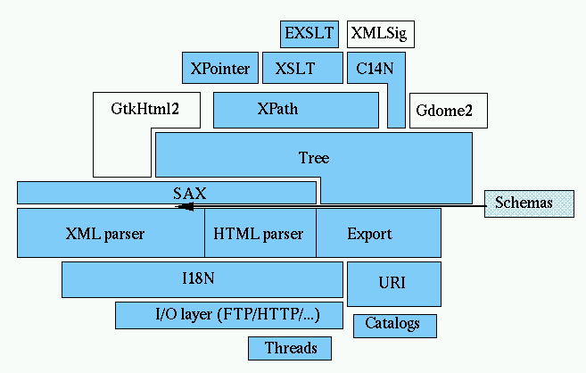

The XML C parser and toolkit of Gnome
Note: this is the flat content of the web
site
libxml, a.k.a. gnome-xml
"Programming
with libxml2 is like the thrilling embrace of an exotic stranger." Mark
Pilgrim
Libxml2 is the XML C parser and toolkit developed for the Gnome project
(but usable outside of the Gnome platform), it is free software available
under the MIT
License. XML itself is a metalanguage to design markup languages, i.e.
text language where semantic and structure are added to the content using
extra "markup" information enclosed between angle brackets. HTML is the most
well-known markup language. Though the library is written in C a variety of language bindings make it available in
other environments.
Libxml2 is known to be very portable, the library should build and work
without serious troubles on a variety of systems (Linux, Unix, Windows,
CygWin, MacOS, MacOS X, RISC Os, OS/2, VMS, QNX, MVS, ...)
Libxml2 implements a number of existing standards related to markup
languages:
In most cases libxml2 tries to implement the specifications in a
relatively strictly compliant way. As of release 2.4.16, libxml2 passed all
1800+ tests from the OASIS XML Tests
Suite.
To some extent libxml2 provides support for the following additional
specifications but doesn't claim to implement them completely:
- Document Object Model (DOM) http://www.w3.org/TR/DOM-Level-2-Core/
the document model, but it doesn't implement the API itself, gdome2 does
this on top of libxml2
- RFC 959 :
libxml2 implements a basic FTP client code
- RFC 1945 :
HTTP/1.0, again a basic HTTP client code
- SAX: a SAX2 like interface and a minimal SAX1 implementation compatible
with early expat versions
A partial implementation of XML Schemas Part
1: Structure is being worked on but it would be far too early to make any
conformance statement about it at the moment.
Separate documents:
Logo designed by Marc Liyanage.
This document describes libxml, the XML C parser and toolkit developed for the
Gnome project. XML is a standard for building tag-based
structured documents/data.
Here are some key points about libxml:
- Libxml2 exports Push (progressive) and Pull (blocking) type parser
interfaces for both XML and HTML.
- Libxml2 can do DTD validation at parse time, using a parsed document
instance, or with an arbitrary DTD.
- Libxml2 includes complete XPath, XPointer and XInclude implementations.
- It is written in plain C, making as few assumptions as possible, and
sticking closely to ANSI C/POSIX for easy embedding. Works on
Linux/Unix/Windows, ported to a number of other platforms.
- Basic support for HTTP and FTP client allowing applications to fetch
remote resources.
- The design is modular, most of the extensions can be compiled out.
- The internal document representation is as close as possible to the DOM interfaces.
- Libxml2 also has a SAX like interface;
the interface is designed to be compatible with Expat.
- This library is released under the MIT
License. See the Copyright file in the distribution for the precise
wording.
Warning: unless you are forced to because your application links with a
Gnome-1.X library requiring it, Do Not Use libxml1, use
libxml2
Table of Contents:
- Licensing Terms for libxml
libxml2 is released under the MIT
License; see the file Copyright in the distribution for the precise
wording
- Can I embed libxml2 in a proprietary application ?
Yes. The MIT License allows you to keep proprietary the changes you
made to libxml, but it would be graceful to send-back bug fixes and
improvements as patches for possible incorporation in the main
development tree.
- Do Not Use
libxml1, use libxml2
- Where can I get libxml ?
The original distribution comes from rpmfind.net or gnome.org
Most Linux and BSD distributions include libxml, this is probably the
safer way for end-users to use libxml.
David Doolin provides precompiled Windows versions at http://www.ce.berkeley.edu/~doolin/code/libxmlwin32/
- I see libxml and libxml2 releases, which one should I install ?
- If you are not constrained by backward compatibility issues with
existing applications, install libxml2 only
- If you are not doing development, you can safely install both.
Usually the packages libxml and libxml2 are
compatible (this is not the case for development packages).
- If you are a developer and your system provides separate packaging
for shared libraries and the development components, it is possible
to install libxml and libxml2, and also libxml-devel
and libxml2-devel
too for libxml2 >= 2.3.0
- If you are developing a new application, please develop against
libxml2(-devel)
- I can't install the libxml package, it conflicts with libxml0
You probably have an old libxml0 package used to provide the shared
library for libxml.so.0, you can probably safely remove it. The libxml
packages provided on rpmfind.net provide
libxml.so.0
- I can't install the libxml(2) RPM package due to failed
dependencies
The most generic solution is to re-fetch the latest src.rpm , and
rebuild it locally with
rpm --rebuild libxml(2)-xxx.src.rpm.
If everything goes well it will generate two binary rpm packages (one
providing the shared libs and xmllint, and the other one, the -devel
package, providing includes, static libraries and scripts needed to build
applications with libxml(2)) that you can install locally.
- What is the process to compile libxml2 ?
As most UNIX libraries libxml2 follows the "standard":
gunzip -c xxx.tar.gz | tar xvf -
cd libxml-xxxx
./configure --help
to see the options, then the compilation/installation proper
./configure [possible options]
make
make install
At that point you may have to rerun ldconfig or a similar utility to
update your list of installed shared libs.
- What other libraries are needed to compile/install libxml2 ?
Libxml2 does not require any other library, the normal C ANSI API
should be sufficient (please report any violation to this rule you may
find).
However if found at configuration time libxml2 will detect and use the
following libs:
- libz : a
highly portable and available widely compression library.
- iconv: a powerful character encoding conversion library. It is
included by default in recent glibc libraries, so it doesn't need to
be installed specifically on Linux. It now seems a part
of the official UNIX specification. Here is one implementation of the
library which source can be found here.
- Make check fails on some platforms
Sometimes the regression tests' results don't completely match the
value produced by the parser, and the makefile uses diff to print the
delta. On some platforms the diff return breaks the compilation process;
if the diff is small this is probably not a serious problem.
Sometimes (especially on Solaris) make checks fail due to limitations
in make. Try using GNU-make instead.
- I use the CVS version and there is no configure script
The configure script (and other Makefiles) are generated. Use the
autogen.sh script to regenerate the configure script and Makefiles,
like:
./autogen.sh --prefix=/usr --disable-shared
- I have troubles when running make tests with gcc-3.0
It seems the initial release of gcc-3.0 has a problem with the
optimizer which miscompiles the URI module. Please use another
compiler.
- Troubles compiling or linking programs using libxml2
Usually the problem comes from the fact that the compiler doesn't get
the right compilation or linking flags. There is a small shell script
xml2-config which is installed as part of libxml2 usual
install process which provides those flags. Use
xml2-config --cflags
to get the compilation flags and
xml2-config --libs
to get the linker flags. Usually this is done directly from the
Makefile as:
CFLAGS=`xml2-config --cflags`
LIBS=`xml2-config --libs`
- I want to install my own copy of libxml2 in my home directory and link
my programs against it, but it doesn't work
There are many different ways to accomplish this. Here is one way to
do this under Linux. Suppose your home directory is /home/user.
Then:
- Create a subdirectory, let's call it
myxml
- unpack the libxml2 distribution into that subdirectory
- chdir into the unpacked distribution (
/home/user/myxml/libxml2
)
- configure the library using the "
--prefix" switch,
specifying an installation subdirectory in /home/user/myxml,
e.g.
./configure --prefix /home/user/myxml/xmlinst {other
configuration options}
- now run
make followed by make install
- At this point, the installation subdirectory contains the complete
"private" include files, library files and binary program files (e.g.
xmllint), located in
/home/user/myxml/xmlinst/lib, /home/user/myxml/xmlinst/include
and /home/user/myxml/xmlinst/bin
respectively.
- In order to use this "private" library, you should first add it
to the beginning of your default PATH (so that your own private
program files such as xmllint will be used instead of the normal
system ones). To do this, the Bash command would be
export PATH=/home/user/myxml/xmlinst/bin:$PATH
- Now suppose you have a program
test1.c that you would
like to compile with your "private" library. Simply compile it
using the command gcc `xml2-config --cflags --libs` -o test
test.c
Note that, because your PATH has been set with
/home/user/myxml/xmlinst/bin at the beginning, the
xml2-config program which you just installed will be used instead of
the system default one, and this will automatically get the
correct libraries linked with your program.
- xmlDocDump() generates output on one line.
Libxml2 will not invent spaces in the content of a
document since all spaces in the content of a document are
significant. If you build a tree from the API and want
indentation:
- the correct way is to generate those yourself too.
- the dangerous way is to ask libxml2 to add those blanks to your
content modifying the content of your document in the
process. The result may not be what you expect. There is
NO way to guarantee that such a modification won't
affect other parts of the content of your document. See xmlKeepBlanksDefault
() and xmlSaveFormatFile
()
- Extra nodes in the document:
For a XML file as below:
<?xml version="1.0"?>
<PLAN xmlns="http://www.argus.ca/autotest/1.0/">
<NODE CommFlag="0"/>
<NODE CommFlag="1"/>
</PLAN>
after parsing it with the function
pxmlDoc=xmlParseFile(...);
I want to the get the content of the first node (node with the
CommFlag="0")
so I did it as following;
xmlNodePtr pnode;
pnode=pxmlDoc->children->children;
but it does not work. If I change it to
pnode=pxmlDoc->children->children->next;
then it works. Can someone explain it to me.
In XML all characters in the content of the document are significant
including blanks and formatting line breaks.
The extra nodes you are wondering about are just that, text nodes with
the formatting spaces which are part of the document but that people tend
to forget. There is a function xmlKeepBlanksDefault
() to remove those at parse time, but that's an heuristic, and its
use should be limited to cases where you are certain there is no
mixed-content in the document.
- I get compilation errors of existing code like when accessing
root or child fields of nodes.
You are compiling code developed for libxml version 1 and using a
libxml2 development environment. Either switch back to libxml v1 devel or
even better fix the code to compile with libxml2 (or both) by following the instructions.
- I get compilation errors about non existing
xmlRootNode or xmlChildrenNode
fields.
The source code you are using has been upgraded to be able to compile with both libxml
and libxml2, but you need to install a more recent version:
libxml(-devel) >= 1.8.8 or libxml2(-devel) >= 2.1.0
- XPath implementation looks seriously broken
XPath implementation prior to 2.3.0 was really incomplete. Upgrade to
a recent version, there are no known bugs in the current version.
- The example provided in the web page does not compile.
It's hard to maintain the documentation in sync with the code
<grin/> ...
Check the previous points 1/ and 2/ raised before, and please send
patches.
- Where can I get more examples and information than provided on the
web page?
Ideally a libxml2 book would be nice. I have no such plan ... But you
can:
- check more deeply the existing
generated doc
- have a look at the set of
examples.
- look for examples of use for libxml2 function using the Gnome code.
For example the following will query the full Gnome CVS base for the
use of the xmlAddChild() function:
http://cvs.gnome.org/lxr/search?string=xmlAddChild
This may be slow, a large hardware donation to the gnome project
could cure this :-)
- Browse
the libxml2 source , I try to write code as clean and documented
as possible, so looking at it may be helpful. In particular the code
of xmllint.c and of the various testXXX.c test programs should
provide good examples of how to do things with the library.
- What about C++ ?
libxml2 is written in pure C in order to allow easy reuse on a number
of platforms, including embedded systems. I don't intend to convert to
C++.
There is however a C++ wrapper which may fulfill your needs:
- How to validate a document a posteriori ?
It is possible to validate documents which had not been validated at
initial parsing time or documents which have been built from scratch
using the API. Use the xmlValidateDtd()
function. It is also possible to simply add a DTD to an existing
document:
xmlDocPtr doc; /* your existing document */
xmlDtdPtr dtd = xmlParseDTD(NULL, filename_of_dtd); /* parse the DTD */
dtd->name = xmlStrDup((xmlChar*)"root_name"); /* use the given root */
doc->intSubset = dtd;
if (doc->children == NULL) xmlAddChild((xmlNodePtr)doc, (xmlNodePtr)dtd);
else xmlAddPrevSibling(doc->children, (xmlNodePtr)dtd);
- So what is this funky "xmlChar" used all the time?
It is a null terminated sequence of utf-8 characters. And only utf-8!
You need to convert strings encoded in different ways to utf-8 before
passing them to the API. This can be accomplished with the iconv library
for instance.
- etc ...
There are several on-line resources related to using libxml:
- Use the search engine to look up
information.
- Check the FAQ.
- Check the extensive
documentation automatically extracted from code comments.
- Look at the documentation about libxml
internationalization support.
- This page provides a global overview and some
examples on how to use libxml.
- Code examples
- John Fleck's libxml2 tutorial: html
or pdf.
- If you need to parse large files, check the xmlReader API tutorial
- James Henstridge wrote some nice
documentation explaining how to use the libxml SAX interface.
- George Lebl wrote an article
for IBM developerWorks about using libxml.
- Check the TODO
file.
- Read the 1.x to 2.x upgrade path
description. If you are starting a new project using libxml you should
really use the 2.x version.
- And don't forget to look at the mailing-list archive.
Well, bugs or missing features are always possible, and I will make a
point of fixing them in a timely fashion. The best way to report a bug is to
use the Gnome
bug tracking database (make sure to use the "libxml2" module name). I
look at reports there regularly and it's good to have a reminder when a bug
is still open. Be sure to specify that the bug is for the package libxml2.
For small problems you can try to get help on IRC, the #xml channel on
irc.gnome.org (port 6667) usually have a few person subscribed which may help
(but there is no garantee and if a real issue is raised it should go on the
mailing-list for archival).
There is also a mailing-list xml@gnome.org for libxml, with an on-line archive (old). To subscribe to this list,
please visit the associated Web page and
follow the instructions. Do not send code, I won't debug it
(but patches are really appreciated!).
Please note that with the current amount of virus and SPAM, sending mail
to the list without being subscribed won't work. There is *far too many
bounces* (in the order of a thousand a day !) I cannot approve them manually
anymore. If your mail to the list bounced waiting for administrator approval,
it is LOST ! Repost it and fix the problem triggering the error.
Check the following before
posting:
- Read the FAQ and use the
search engine to get information related to your problem.
- Make sure you are using a recent
version, and that the problem still shows up in a recent version.
- Check the list
archives to see if the problem was reported already. In this case
there is probably a fix available, similarly check the registered
open bugs.
- Make sure you can reproduce the bug with xmllint or one of the test
programs found in source in the distribution.
- Please send the command showing the error as well as the input (as an
attachment)
Then send the bug with associated information to reproduce it to the xml@gnome.org list; if it's really libxml
related I will approve it. Please do not send mail to me directly, it makes
things really hard to track and in some cases I am not the best person to
answer a given question, ask on the list.
To be really clear about support:
- Support or help requests MUST be sent to
the list or on bugzilla in case of problems, so that the Question
and Answers can be shared publicly. Failing to do so carries the implicit
message "I want free support but I don't want to share the benefits with
others" and is not welcome. I will automatically Carbon-Copy the
xml@gnome.org mailing list for any technical reply made about libxml2 or
libxslt.
- There is no garantee of support, if
your question remains unanswered after a week, repost it, making sure you
gave all the detail needed and the information requested.
- Failing to provide information as requested or double checking first
for prior feedback also carries the implicit message "the time of the
library maintainers is less valuable than my time" and might not be
welcome.
Of course, bugs reported with a suggested patch for fixing them will
probably be processed faster than those without.
If you're looking for help, a quick look at the list archive may actually
provide the answer. I usually send source samples when answering libxml2
usage questions. The auto-generated documentation is
not as polished as I would like (i need to learn more about DocBook), but
it's a good starting point.
You can help the project in various ways, the best thing to do first is to
subscribe to the mailing-list as explained before, check the archives and the Gnome bug
database:
- Provide patches when you find problems.
- Provide the diffs when you port libxml2 to a new platform. They may not
be integrated in all cases but help pinpointing portability problems
and
- Provide documentation fixes (either as patches to the code comments or
as HTML diffs).
- Provide new documentations pieces (translations, examples, etc
...).
- Check the TODO file and try to close one of the items.
- Take one of the points raised in the archive or the bug database and
provide a fix. Get in touch with me
before to avoid synchronization problems and check that the suggested
fix will fit in nicely :-)
The latest versions of libxml2 can be found on the xmlsoft.org server ( HTTP, FTP and rsync are available), there is also
mirrors (Australia( Web), France) or on the Gnome FTP server as source archive
, Antonin Sprinzl also provide a
mirror in Austria. (NOTE that you need both the libxml(2) and libxml(2)-devel
packages installed to compile applications using libxml.)
You can find all the history of libxml(2) and libxslt releases in the old directory. The precompiled
Windows binaries made by Igor Zlatovic are available in the win32 directory.
Binary ports:
If you know other supported binary ports, please contact me.
Snapshot:
Contributions:
I do accept external contributions, especially if compiling on another
platform, get in touch with the list to upload the package, wrappers for
various languages have been provided, and can be found in the bindings section
Libxml2 is also available from CVS:
Items not finished and worked on, get in touch with the list if you want
to help those
The change log describes the recents commits
to the CVS code base.
There is the list of public releases:
2.6.20: Jul 10 2005
- build fixes: Windows build (Rob Richards), Mingw compilation (Igor
Zlatkovic), Windows Makefile (Igor), gcc warnings (Kasimier and
andriy@google.com), use gcc weak references to pthread to avoid the
pthread dependancy on Linux, compilation problem (Steve Nairn),
compiling of subset (Morten Welinder), IPv6/ss_family compilation
(William Brack), compilation when disabling parts of the library,
standalone test distribution.
- bug fixes: bug in lang(), memory cleanup on errors (William Brack),
HTTP query strings (Aron Stansvik), memory leak in DTD (William),
integer overflow in XPath (William), nanoftp buffer size, pattern
"." apth fixup (Kasimier), leak in tree reported by Malcolm Rowe,
replaceNode patch (Brent Hendricks), CDATA with NULL content
(Mark Vakoc), xml:base fixup on XInclude (William), pattern
fixes (William), attribute bug in exclusive c14n (Aleksey Sanin),
xml:space and xml:lang with SAX2 (Rob Richards), namespace
trouble in complex parsing (Malcolm Rowe), XSD type QNames fixes
(Kasimier), XPath streaming fixups (William), RelaxNG bug (Rob Richards),
Schemas for Schemas fixes (Kasimier), removal of ID (Rob Richards),
a small RelaxNG leak, HTML parsing in push mode bug (James Bursa),
failure to detect UTF-8 parsing bugs in CDATA sections, areBlanks()
heuristic failure, duplicate attributes in DTD bug (William).
- improvements: lot of work on Schemas by Kasimier Buchcik both on
conformance and streaming, Schemas validation messages (Kasimier
Buchcik, Matthew Burgess), namespace removal at the python level
(Brent Hendricks), Update to new Schemas regression tests from
W3C/Nist (Kasimier), xmlSchemaValidateFile() (Kasimier), implementation
of xmlTextReaderReadInnerXml and xmlTextReaderReadOuterXml (James Wert),
standalone test framework and programs, new DOM import APIs
xmlDOMWrapReconcileNamespaces() xmlDOMWrapAdoptNode() and
xmlDOMWrapRemoveNode(), extension of xmllint capabilities for
SAX and Schemas regression tests, xmlStopParser() available in
pull mode too, ienhancement to xmllint --shell namespaces support,
Windows port of the standalone testing tools (Kasimier and William),
xmlSchemaValidateStream() xmlSchemaSAXPlug() and xmlSchemaSAXUnplug()
SAX Schemas APIs, Schemas xmlReader support.
2.6.19: Apr 02 2005
- build fixes: drop .la from RPMs, --with-minimum build fix (William
Brack), use XML_SOCKLEN_T instead of SOCKLEN_T because it breaks with
AIX 5.3 compiler, fixed elfgcchack.h generation and PLT reduction
code on Linux/ELF/gcc4
- bug fixes: schemas type decimal fixups (William Brack), xmmlint return
code (Gerry Murphy), small schemas fixes (Matthew Burgess and
GUY Fabrice), workaround "DAV:" namespace brokeness in c14n (Aleksey
Sanin), segfault in Schemas (Kasimier Buchcik), Schemas attribute
validation (Kasimier), Prop related functions and xmlNewNodeEatName
(Rob Richards), HTML serialization of name attribute on a elements,
Python error handlers leaks and improvement (Brent Hendricks),
uninitialized variable in encoding code, Relax-NG validation bug,
potential crash if gnorableWhitespace is NULL, xmlSAXParseDoc and
xmlParseDoc signatures, switched back to assuming UTF-8 in case
no encoding is given at serialization time
- improvements: lot of work on Schemas by Kasimier Buchcik on facets
checking and also mixed handling.
2.6.18: Mar 13 2005
- build fixes: warnings (Peter Breitenlohner), testapi.c generation,
Bakefile support (Francesco Montorsi), Windows compilation (Joel Reed),
some gcc4 fixes, HP-UX portability fixes (Rick Jones).
- bug fixes: xmlSchemaElementDump namespace (Kasimier Buchcik), push and
xmlreader stopping on non-fatal errors, thread support for dictionnaries
reference counting (Gary Coady), internal subset and push problem,
URL saved in xmlCopyDoc, various schemas bug fixes (Kasimier), Python
paths fixup (Stephane Bidoul), xmlGetNodePath and namespaces,
xmlSetNsProp fix (Mike Hommey), warning should not count as error
(William Brack), xmlCreatePushParser empty chunk, XInclude parser
flags (William), cleanup FTP and HTTP code to reuse the uri parsing
and IPv6 (William), xmlTextWriterStartAttributeNS fix (Rob Richards),
XMLLINT_INDENT being empty (William), xmlWriter bugs (Rob Richards),
multithreading on Windows (Rich Salz), xmlSearchNsByHref fix (Kasimier),
Python binding leak (Brent Hendricks), aliasing bug exposed by gcc4
on s390, xmlTextReaderNext bug (Rob Richards), Schemas decimal type
fixes (William Brack), xmlByteConsumed static buffer (Ben Maurer).
- improvement: speedup parsing comments and DTDs, dictionnary support for
hash tables, Schemas Identity constraints (Kasimier), streaming XPath
subset, xmlTextReaderReadString added (Bjorn Reese), Schemas canonical
values handling (Kasimier), add xmlTextReaderByteConsumed (Aron
Stansvik),
- Documentation: Wiki support (Joel Reed)
2.6.17: Jan 16 2005
- build fixes: Windows, warnings removal (William Brack),
maintainer-clean dependency(William), build in a different directory
(William), fixing --with-minimum configure build (William), BeOS
build (Marcin Konicki), Python-2.4 detection (William), compilation
on AIX (Dan McNichol)
- bug fixes: xmlTextReaderHasAttributes (Rob Richards), xmlCtxtReadFile()
to use the catalog(s), loop on output (William Brack), XPath memory leak,
ID deallocation problem (Steve Shepard), debugDumpNode crash (William),
warning not using error callback (William), xmlStopParser bug (William),
UTF-16 with BOM on DTDs (William), namespace bug on empty elements
in push mode (Rob Richards), line and col computations fixups (Aleksey
Sanin), xmlURIEscape fix (William), xmlXPathErr on bad range (William),
patterns with too many steps, bug in RNG choice optimization, line
number sometimes missing.
- improvements: XSD Schemas (Kasimier Buchcik), python generator (William),
xmlUTF8Strpos speedup (William), unicode Python strings (William),
XSD error reports (Kasimier Buchcik), Python __str__ call serialize().
- new APIs: added xmlDictExists(), GetLineNumber and GetColumnNumber
for the xmlReader (Aleksey Sanin), Dynamic Shared Libraries APIs
(mostly Joel Reed), error extraction API from regexps, new XMLSave
option for format (Phil Shafer)
- documentation: site improvement (John Fleck), FAQ entries (William).
2.6.16: Nov 10 2004
- general hardening and bug fixing crossing all the API based on new
automated regression testing
- build fix: IPv6 build and test on AIX (Dodji Seketeli)
- bug fixes: problem with XML::Libxml reported by Petr Pajas, encoding
conversion functions return values, UTF-8 bug affecting XPath reported by
Markus Bertheau, catalog problem with NULL entries (William Brack)
- documentation: fix to xmllint man page, some API function descritpion
were updated.
- improvements: DTD validation APIs provided at the Python level (Brent
Hendricks)
2.6.15: Oct 27 2004
- security fixes on the nanoftp and nanohttp modules
- build fixes: xmllint detection bug in configure, building outside the
source tree (Thomas Fitzsimmons)
- bug fixes: HTML parser on broken ASCII chars in names (William), Python
paths (Malcolm Tredinnick), xmlHasNsProp and default namespace (William),
saving to python file objects (Malcolm Tredinnick), DTD lookup fix
(Malcolm), save back <group> in catalogs (William), tree build
fixes (DV and Rob Richards), Schemas memory bug, structured error handler
on Python 64bits, thread local memory deallocation, memory leak reported
by Volker Roth, xmlValidateDtd in the presence of an internal subset,
entities and _private problem (William), xmlBuildRelativeURI error
(William).
- improvements: better XInclude error reports (William), tree debugging
module and tests, convenience functions at the Reader API (Graham
Bennett), add support for PI in the HTML parser.
2.6.14: Sep 29 2004
- build fixes: configure paths for xmllint and xsltproc, compilation
without HTML parser, compilation warning cleanups (William Brack &
Malcolm Tredinnick), VMS makefile update (Craig Berry),
- bug fixes: xmlGetUTF8Char (William Brack), QName properties (Kasimier
Buchcik), XInclude testing, Notation serialization, UTF8ToISO8859x
transcoding (Mark Itzcovitz), lots of XML Schemas cleanup and fixes
(Kasimier), ChangeLog cleanup (Stepan Kasal), memory fixes (Mark Vakoc),
handling of failed realloc(), out of bound array adressing in Schemas
date handling, Python space/tabs cleanups (Malcolm Tredinnick), NMTOKENS
E20 validation fix (Malcolm),
- improvements: added W3C XML Schemas testsuite (Kasimier Buchcik), add
xmlSchemaValidateOneElement (Kasimier), Python exception hierearchy
(Malcolm Tredinnick), Python libxml2 driver improvement (Malcolm
Tredinnick), Schemas support for xsi:schemaLocation,
xsi:noNamespaceSchemaLocation, xsi:type (Kasimier Buchcik)
2.6.13: Aug 31 2004
- build fixes: Windows and zlib (Igor Zlatkovic), -O flag with gcc,
Solaris compiler warning, fixing RPM BuildRequires,
- fixes: DTD loading on Windows (Igor), Schemas error reports APIs
(Kasimier Buchcik), Schemas validation crash, xmlCheckUTF8 (William Brack
and Julius Mittenzwei), Schemas facet check (Kasimier), default namespace
problem (William), Schemas hexbinary empty values, encoding error could
genrate a serialization loop.
- Improvements: Schemas validity improvements (Kasimier), added --path
and --load-trace options to xmllint
- documentation: tutorial update (John Fleck)
2.6.12: Aug 22 2004
- build fixes: fix --with-minimum, elfgcchack.h fixes (Peter
Breitenlohner), perl path lookup (William), diff on Solaris (Albert
Chin), some 64bits cleanups.
- Python: avoid a warning with 2.3 (William Brack), tab and space mixes
(William), wrapper generator fixes (William), Cygwin support (Gerrit P.
Haase), node wrapper fix (Marc-Antoine Parent), XML Schemas support
(Torkel Lyng)
- Schemas: a lot of bug fixes and improvements from Kasimier Buchcik
- fixes: RVT fixes (William), XPath context resets bug (William), memory
debug (Steve Hay), catalog white space handling (Peter Breitenlohner),
xmlReader state after attribute reading (William), structured error
handler (William), XInclude generated xml:base fixup (William), Windows
memory reallocation problem (Steve Hay), Out of Memory conditions
handling (William and Olivier Andrieu), htmlNewDoc() charset bug,
htmlReadMemory init (William), a posteriori validation DTD base
(William), notations serialization missing, xmlGetNodePath (Dodji),
xmlCheckUTF8 (Diego Tartara), missing line numbers on entity
(William)
- improvements: DocBook catalog build scrip (William), xmlcatalog tool
(Albert Chin), xmllint --c14n option, no_proxy environment (Mike Hommey),
xmlParseInNodeContext() addition, extend xmllint --shell, allow XInclude
to not generate start/end nodes, extend xmllint --version to include CVS
tag (William)
- documentation: web pages fixes, validity API docs fixes (William)
schemas API fix (Eric Haszlakiewicz), xmllint man page (John Fleck)
2.6.11: July 5 2004
- Schemas: a lot of changes and improvements by Kasimier Buchcik for
attributes, namespaces and simple types.
- build fixes: --with-minimum (William Brack), some gcc cleanup
(William), --with-thread-alloc (William)
- portability: Windows binary package change (Igor Zlatkovic), Catalog
path on Windows
- documentation: update to the tutorial (John Fleck), xmllint return code
(John Fleck), man pages (Ville Skytta),
- bug fixes: C14N bug serializing namespaces (Aleksey Sanin), testSAX
properly initialize the library (William), empty node set in XPath
(William), xmlSchemas errors (William), invalid charref problem pointed
by Morus Walter, XInclude xml:base generation (William), Relax-NG bug
with div processing (William), XPointer and xml:base problem(William),
Reader and entities, xmllint return code for schemas (William), reader
streaming problem (Steve Ball), DTD serialization problem (William),
libxml.m4 fixes (Mike Hommey), do not provide destructors as methods on
Python classes, xmlReader buffer bug, Python bindings memory interfaces
improvement (with Stéphane Bidoul), Fixed the push parser to be back to
synchronous behaviour.
- improvement: custom per-thread I/O enhancement (Rob Richards), register
namespace in debug shell (Stefano Debenedetti), Python based regression
test for non-Unix users (William), dynamically increase the number of
XPath extension functions in Python and fix a memory leak (Marc-Antoine
Parent and William)
- performance: hack done with Arjan van de Ven to reduce ELF footprint
and generated code on Linux, plus use gcc runtime profiling to optimize
the code generated in the RPM packages.
2.6.10: May 17 2004
- Web page generated for ChangeLog
- build fixes: --without-html problems, make check without make all
- portability: problem with xpath.c on Windows (MSC and Borland), memcmp
vs. strncmp on Solaris, XPath tests on Windows (Mark Vakoc), C++ do not
use "list" as parameter name, make tests work with Python 1.5 (Ed
Davis),
- improvements: made xmlTextReaderMode public, small buffers resizing
(Morten Welinder), add --maxmem option to xmllint, add
xmlPopInputCallback() for Matt Sergeant, refactoring of serialization
escaping, added escaping customization
- bugfixes: xsd:extension (Taihei Goi), assorted regexp bugs (William
Brack), xmlReader end of stream problem, node deregistration with reader,
URI escaping and filemanes, XHTML1 formatting (Nick Wellnhofer), regexp
transition reduction (William), various XSD Schemas fixes (Kasimier
Buchcik), XInclude fallback problem (William), weird problems with DTD
(William), structured error handler callback context (William), reverse
xmlEncodeSpecialChars() behaviour back to escaping '"'
2.6.9: Apr 18 2004
- implement xml:id Working Draft, relaxed XPath id() checking
- bugfixes: xmlCtxtReset (Brent Hendricks), line number and CDATA (Dave
Beckett), Relax-NG compilation (William Brack), Regexp patches (with
William), xmlUriEscape (Mark Vakoc), a Relax-NG notAllowed problem (with
William), Relax-NG name classes compares (William), XInclude duplicate
fallback (William), external DTD encoding detection (William), a DTD
validation bug (William), xmlReader Close() fix, recusive extention
schemas
- improvements: use xmlRead* APIs in test tools (Mark Vakoc), indenting
save optimization, better handle IIS broken HTTP redirect behaviour (Ian
Hummel), HTML parser frameset (James Bursa), libxml2-python RPM
dependancy, XML Schemas union support (Kasimier Buchcik), warning removal
clanup (William), keep ChangeLog compressed when installing from RPMs
- documentation: examples and xmlDocDumpMemory docs (John Fleck), new
example (load, xpath, modify, save), xmlCatalogDump() comments,
- Windows: Borland C++ builder (Eric Zurcher), work around Microsoft
compiler NaN handling bug (Mark Vakoc)
2.6.8: Mar 23 2004
- First step of the cleanup of the serialization code and APIs
- XML Schemas: mixed content (Adam Dickmeiss), QName handling fixes (Adam
Dickmeiss), anyURI for "" (John Belmonte)
- Python: Canonicalization C14N support added (Anthony Carrico)
- xmlDocCopyNode() extension (William)
- Relax-NG: fix when processing XInclude results (William), external
reference in interleave (William), missing error on <choice>
failure (William), memory leak in schemas datatype facets.
- xmlWriter: patch for better DTD support (Alfred Mickautsch)
- bug fixes: xmlXPathLangFunction memory leak (Mike Hommey and William
Brack), no ID errors if using HTML_PARSE_NOERROR, xmlcatalog fallbacks to
URI on SYSTEM lookup failure, XInclude parse flags inheritance (William),
XInclude and XPointer fixes for entities (William), XML parser bug
reported by Holger Rauch, nanohttp fd leak (William), regexps char
groups '-' handling (William), dictionnary reference counting problems,
do not close stderr.
- performance patches from Petr Pajas
- Documentation fixes: XML_CATALOG_FILES in man pages (Mike Hommey)
- compilation and portability fixes: --without-valid, catalog cleanups
(Peter Breitenlohner), MingW patch (Roland Schwingel), cross-compilation
to Windows (Christophe de Vienne), --with-html-dir fixup (Julio Merino
Vidal), Windows build (Eric Zurcher)
2.6.7: Feb 23 2004
- documentation: tutorial updates (John Fleck), benchmark results
- xmlWriter: updates and fixes (Alfred Mickautsch, Lucas Brasilino)
- XPath optimization (Petr Pajas)
- DTD ID handling optimization
- bugfixes: xpath number with > 19 fractional (William Brack), push
mode with unescaped '>' characters, fix xmllint --stream --timing, fix
xmllint --memory --stream memory usage, xmlAttrSerializeTxtContent
handling NULL, trying to fix Relax-NG/Perl interface.
- python: 2.3 compatibility, whitespace fixes (Malcolm Tredinnick)
- Added relaxng option to xmllint --shell
2.6.6: Feb 12 2004
- nanohttp and nanoftp: buffer overflow error on URI parsing (Igor and
William) reported by Yuuichi Teranishi
- bugfixes: make test and path issues, xmlWriter attribute serialization
(William Brack), xmlWriter indentation (William), schemas validation
(Eric Haszlakiewicz), XInclude dictionnaries issues (William and Oleg
Paraschenko), XInclude empty fallback (William), HTML warnings (William),
XPointer in XInclude (William), Python namespace serialization,
isolat1ToUTF8 bound error (Alfred Mickautsch), output of parameter
entities in internal subset (William), internal subset bug in push mode,
<xs:all> fix (Alexey Sarytchev)
- Build: fix for automake-1.8 (Alexander Winston), warnings removal
(Philip Ludlam), SOCKLEN_T detection fixes (Daniel Richard), fix
--with-minimum configuration.
- XInclude: allow the 2001 namespace without warning.
- Documentation: missing example/index.html (John Fleck), version
dependancies (John Fleck)
- reader API: structured error reporting (Steve Ball)
- Windows compilation: mingw, msys (Mikhail Grushinskiy), function
prototype (Cameron Johnson), MSVC6 compiler warnings, _WINSOCKAPI_
patch
- Parsers: added xmlByteConsumed(ctxt) API to get the byte offest in
input.
2.6.5: Jan 25 2004
- Bugfixes: dictionnaries for schemas (William Brack), regexp segfault
(William), xs:all problem (William), a number of XPointer bugfixes
(William), xmllint error go to stderr, DTD validation problem with
namespace, memory leak (William), SAX1 cleanup and minimal options fixes
(Mark Vadoc), parser context reset on error (Shaun McCance), XPath union
evaluation problem (William) , xmlReallocLoc with NULL (Aleksey Sanin),
XML Schemas double free (Steve Ball), XInclude with no href, argument
callbacks order for XPath callbacks (Frederic Peters)
- Documentation: python scripts (William Brack), xslt stylesheets (John
Fleck), doc (Sven Zimmerman), I/O example.
- Python bindings: fixes (William), enum support (Stéphane Bidoul),
structured error reporting (Stéphane Bidoul)
- XInclude: various fixes for conformance, problem related to dictionnary
references (William & me), recursion (William)
- xmlWriter: indentation (Lucas Brasilino), memory leaks (Alfred
Mickautsch),
- xmlSchemas: normalizedString datatype (John Belmonte)
- code cleanup for strings functions (William)
- Windows: compiler patches (Mark Vakoc)
- Parser optimizations, a few new XPath and dictionnary APIs for future
XSLT optimizations.
2.6.4: Dec 24 2003
- Windows build fixes (Igor Zlatkovic)
- Some serious XInclude problems reported by Oleg Paraschenko and
- Unix and Makefile packaging fixes (me, William Brack,
- Documentation improvements (John Fleck, William Brack), example fix
(Lucas Brasilino)
- bugfixes: xmlTextReaderExpand() with xmlReaderWalker, XPath handling of
NULL strings (William Brack) , API building reader or parser from
filedescriptor should not close it, changed XPath sorting to be stable
again (William Brack), xmlGetNodePath() generating '(null)' (William
Brack), DTD validation and namespace bug (William Brack), XML Schemas
double inclusion behaviour
2.6.3: Dec 10 2003
- documentation updates and cleanup (DV, William Brack, John Fleck)
- added a repository of examples, examples from Aleksey Sanin, Dodji
Seketeli, Alfred Mickautsch
- Windows updates: Mark Vakoc, Igor Zlatkovic, Eric Zurcher, Mingw
(Kenneth Haley)
- Unicode range checking (William Brack)
- code cleanup (William Brack)
- Python bindings: doc (John Fleck), bug fixes
- UTF-16 cleanup and BOM issues (William Brack)
- bug fixes: ID and xmlReader validation, XPath (William Brack),
xmlWriter (Alfred Mickautsch), hash.h inclusion problem, HTML parser
(James Bursa), attribute defaulting and validation, some serialization
cleanups, XML_GET_LINE macro, memory debug when using threads (William
Brack), serialization of attributes and entities content, xmlWriter
(Daniel Schulman)
- XInclude bugfix, new APIs and update to the last version including the
namespace change.
- XML Schemas improvements: include (Robert Stepanek), import and
namespace handling, fixed the regression tests troubles, added examples
based on Eric van der Vlist book, regexp fixes
- preliminary pattern support for streaming (needed for schemas
constraints), added xmlTextReaderPreservePattern() to collect subdocument
when streaming.
- various fixes in the structured error handling
2.6.2: Nov 4 2003
- XPath context unregistration fixes
- text node coalescing fixes (Mark Lilback)
- API to screate a W3C Schemas from an existing document (Steve Ball)
- BeOS patches (Marcin 'Shard' Konicki)
- xmlStrVPrintf function added (Aleksey Sanin)
- compilation fixes (Mark Vakoc)
- stdin parsing fix (William Brack)
- a posteriori DTD validation fixes
- xmlReader bug fixes: Walker fixes, python bindings
- fixed xmlStopParser() to really stop the parser and errors
- always generate line numbers when using the new xmlReadxxx
functions
- added XInclude support to the xmlReader interface
- implemented XML_PARSE_NONET parser option
- DocBook XSLT processing bug fixed
- HTML serialization for <p> elements (William Brack and me)
- XPointer failure in XInclude are now handled as resource errors
- fixed xmllint --html to use the HTML serializer on output (added
--xmlout to implement the previous behaviour of saving it using the XML
serializer)
2.6.1: Oct 28 2003
- Mostly bugfixes after the big 2.6.0 changes
- Unix compilation patches: libxml.m4 (Patrick Welche), warnings cleanup
(William Brack)
- Windows compilation patches (Joachim Bauch, Stephane Bidoul, Igor
Zlatkovic)
- xmlWriter bugfix (Alfred Mickautsch)
- chvalid.[ch]: couple of fixes from Stephane Bidoul
- context reset: error state reset, push parser reset (Graham
Bennett)
- context reuse: generate errors if file is not readable
- defaulted attributes for element coming from internal entities
(Stephane Bidoul)
- Python: tab and spaces mix (William Brack)
- Error handler could crash in DTD validation in 2.6.0
- xmlReader: do not use the document or element _private field
- testSAX.c: avoid a problem with some PIs (Massimo Morara)
- general bug fixes: mandatory encoding in text decl, serializing
Document Fragment nodes, xmlSearchNs 2.6.0 problem (Kasimier Buchcik),
XPath errors not reported, slow HTML parsing of large documents.
2.6.0: Oct 20 2003
- Major revision release: should be API and ABI compatible but got a lot
of change
- Increased the library modularity, far more options can be stripped out,
a --with-minimum configuration will weight around 160KBytes
- Use per parser and per document dictionnary, allocate names and small
text nodes from the dictionnary
- Switch to a SAX2 like parser rewrote most of the XML parser core,
provides namespace resolution and defaulted attributes, minimize memory
allocations and copies, namespace checking and specific error handling,
immutable buffers, make predefined entities static structures, etc...
- rewrote all the error handling in the library, all errors can be
intercepted at a structured level, with precise information
available.
- New simpler and more generic XML and HTML parser APIs, allowing to
easilly modify the parsing options and reuse parser context for multiple
consecutive documents.
- Similar new APIs for the xmlReader, for options and reuse, provided new
functions to access content as const strings, use them for Python
bindings
- a lot of other smaller API improvements: xmlStrPrintf (Aleksey Sanin),
Walker i.e. reader on a document tree based on Alfred Mickautsch code,
make room in nodes for line numbers, reference counting and future PSVI
extensions, generation of character ranges to be checked with faster
algorithm (William), xmlParserMaxDepth (Crutcher Dunnavant), buffer
access
- New xmlWriter API provided by Alfred Mickautsch
- Schemas: base64 support by Anthony Carrico
- Parser<->HTTP integration fix, proper processing of the Mime-Type
and charset informations if available.
- Relax-NG: bug fixes including the one reported by Martijn Faassen and
zeroOrMore, better error reporting.
- Python bindings (Stéphane Bidoul), never use stdout for errors
output
- Portability: all the headers have macros for export and calling
convention definitions (Igor Zlatkovic), VMS update (Craig A. Berry),
Windows: threads (Jesse Pelton), Borland compiler (Eric Zurcher, Igor),
Mingw (Igor), typos (Mark Vakoc), beta version (Stephane Bidoul),
warning cleanups on AIX and MIPS compilers (William Brack), BeOS (Marcin
'Shard' Konicki)
- Documentation fixes and README (William Brack), search fix (William),
tutorial updates (John Fleck), namespace docs (Stefan Kost)
- Bug fixes: xmlCleanupParser (Dave Beckett), threading uninitialized
mutexes, HTML doctype lowercase, SAX/IO (William), compression detection
and restore (William), attribute declaration in DTDs (William), namespace
on attribute in HTML output (William), input filename (Rob Richards),
namespace DTD validation, xmlReplaceNode (Chris Ryland), I/O callbacks
(Markus Keim), CDATA serialization (Shaun McCance), xmlReader (Peter
Derr), high codepoint charref like , buffer access in push
mode (Justin Fletcher), TLS threads on Windows (Jesse Pelton), XPath bug
(William), xmlCleanupParser (Marc Liyanage), CDATA output (William), HTTP
error handling.
- xmllint options: --dtdvalidfpi for Tobias Reif, --sax1 for compat
testing, --nodict for building without tree dictionnary, --nocdata to
replace CDATA by text, --nsclean to remove surperfluous namespace
declarations
- added xml2-config --libtool-libs option from Kevin P. Fleming
- a lot of profiling and tuning of the code, speedup patch for
xmlSearchNs() by Luca Padovani. The xmlReader should do far less
allocation and it speed should get closer to SAX. Chris Anderson worked
on speeding and cleaning up repetitive checking code.
- cleanup of "make tests"
- libxml-2.0-uninstalled.pc from Malcolm Tredinnick
- deactivated the broken docBook SGML parser code and plugged the XML
parser instead.
2.5.11: Sep 9 2003
A bugfix only release:
- risk of crash in Relax-NG
- risk of crash when using multithreaded programs
2.5.10: Aug 15 2003
A bugfixes only release
- Windows Makefiles (William Brack)
- UTF-16 support fixes (Mark Itzcovitz)
- Makefile and portability (William Brack) automake, Linux alpha, Mingw
on Windows (Mikhail Grushinskiy)
- HTML parser (Oliver Stoeneberg)
- XInclude performance problem reported by Kevin Ruscoe
- XML parser performance problem reported by Grant Goodale
- xmlSAXParseDTD() bug fix from Malcolm Tredinnick
- and a couple other cleanup
2.5.9: Aug 9 2003
- bugfixes: IPv6 portability, xmlHasNsProp (Markus Keim), Windows build
(Wiliam Brake, Jesse Pelton, Igor), Schemas (Peter Sobisch), threading
(Rob Richards), hexBinary type (), UTF-16 BOM (Dodji Seketeli),
xmlReader, Relax-NG schemas compilation, namespace handling, EXSLT (Sean
Griffin), HTML parsing problem (William Brack), DTD validation for mixed
content + namespaces, HTML serialization, library initialization,
progressive HTML parser
- better interfaces for Relax-NG error handling (Joachim Bauch, )
- adding xmlXIncludeProcessTree() for XInclud'ing in a subtree
- doc fixes and improvements (John Fleck)
- configure flag for -with-fexceptions when embedding in C++
- couple of new UTF-8 helper functions (William Brack)
- general encoding cleanup + ISO-8859-x without iconv (Peter Jacobi)
- xmlTextReader cleanup + enum for node types (Bjorn Reese)
- general compilation/warning cleanup Solaris/HP-UX/... (William
Brack)
2.5.8: Jul 6 2003
- bugfixes: XPath, XInclude, file/URI mapping, UTF-16 save (Mark
Itzcovitz), UTF-8 checking, URI saving, error printing (William Brack),
PI related memleak, compilation without schemas or without xpath (Joerg
Schmitz-Linneweber/Garry Pennington), xmlUnlinkNode problem with DTDs,
rpm problem on , i86_64, removed a few compilation problems from 2.5.7,
xmlIOParseDTD, and xmlSAXParseDTD (Malcolm Tredinnick)
- portability: DJGPP (MsDos) , OpenVMS (Craig A. Berry)
- William Brack fixed multithreading lock problems
- IPv6 patch for FTP and HTTP accesses (Archana Shah/Wipro)
- Windows fixes (Igor Zlatkovic, Eric Zurcher), threading (Stéphane
Bidoul)
- A few W3C Schemas Structure improvements
- W3C Schemas Datatype improvements (Charlie Bozeman)
- Python bindings for thread globals (Stéphane Bidoul), and method/class
generator
- added --nonet option to xmllint
- documentation improvements (John Fleck)
2.5.7: Apr 25 2003
- Relax-NG: Compiling to regexp and streaming validation on top of the
xmlReader interface, added to xmllint --stream
- xmlReader: Expand(), Next() and DOM access glue, bug fixes
- Support for large files: RGN validated a 4.5GB instance
- Thread support is now configured in by default
- Fixes: update of the Trio code (Bjorn), WXS Date and Duration fixes
(Charles Bozeman), DTD and namespaces (Brent Hendricks), HTML push parser
and zero bytes handling, some missing Windows file path conversions,
behaviour of the parser and validator in the presence of "out of memory"
error conditions
- extended the API to be able to plug a garbage collecting memory
allocator, added xmlMallocAtomic() and modified the allocations
accordingly.
- Performances: removed excessive malloc() calls, speedup of the push and
xmlReader interfaces, removed excessive thread locking
- Documentation: man page (John Fleck), xmlReader documentation
- Python: adding binding for xmlCatalogAddLocal (Brent M Hendricks)
2.5.6: Apr 1 2003
- Fixed W3C XML Schemas datatype, should be compliant now except for
binHex and base64 which are not supported yet.
- bug fixes: non-ASCII IDs, HTML output, XInclude on large docs and
XInclude entities handling, encoding detection on external subsets, XML
Schemas bugs and memory leaks, HTML parser (James Bursa)
- portability: python/trio (Albert Chin), Sun compiler warnings
- documentation: added --relaxng option to xmllint man page (John)
- improved error reporting: xml:space, start/end tag mismatches, Relax NG
errors
2.5.5: Mar 24 2003
- Lot of fixes on the Relax NG implementation. More testing including
DocBook and TEI examples.
- Increased the support for W3C XML Schemas datatype
- Several bug fixes in the URI handling layer
- Bug fixes: HTML parser, xmlReader, DTD validation, XPath, encoding
conversion, line counting in the parser.
- Added support for $XMLLINT_INDENT environment variable, FTP delete
- Fixed the RPM spec file name
2.5.4: Feb 20 2003
2.5.3: Feb 10 2003
- RelaxNG and XML Schemas datatypes improvements, and added a first
version of RelaxNG Python bindings
- Fixes: XLink (Sean Chittenden), XInclude (Sean Chittenden), API fix for
serializing namespace nodes, encoding conversion bug, XHTML1
serialization
- Portability fixes: Windows (Igor), AMD 64bits RPM spec file
2.5.2: Feb 5 2003
- First implementation of RelaxNG, added --relaxng flag to xmllint
- Schemas support now compiled in by default.
- Bug fixes: DTD validation, namespace checking, XInclude and entities,
delegateURI in XML Catalogs, HTML parser, XML reader (Stéphane Bidoul),
XPath parser and evaluation, UTF8ToUTF8 serialization, XML reader memory
consumption, HTML parser, HTML serialization in the presence of
namespaces
- added an HTML API to check elements and attributes.
- Documentation improvement, PDF for the tutorial (John Fleck), doc
patches (Stefan Kost)
- Portability fixes: NetBSD (Julio Merino), Windows (Igor Zlatkovic)
- Added python bindings for XPointer, contextual error reporting
(Stéphane Bidoul)
- URI/file escaping problems (Stefano Zacchiroli)
2.5.1: Jan 8 2003
- Fixes a memory leak and configuration/compilation problems in 2.5.0
- documentation updates (John)
- a couple of XmlTextReader fixes
2.5.0: Jan 6 2003
- New XmltextReader interface based on C#
API (with help of Stéphane Bidoul)
- Windows: more exports, including the new API (Igor)
- XInclude fallback fix
- Python: bindings for the new API, packaging (Stéphane Bidoul),
drv_libxml2.py Python xml.sax driver (Stéphane Bidoul), fixes, speedup
and iterators for Python-2.2 (Hannu Krosing)
- Tutorial fixes (john Fleck and Niraj Tolia) xmllint man update
(John)
- Fix an XML parser bug raised by Vyacheslav Pindyura
- Fix for VMS serialization (Nigel Hall) and config (Craig A. Berry)
- Entities handling fixes
- new API to optionally track node creation and deletion (Lukas
Schroeder)
- Added documentation for the XmltextReader interface and some XML guidelines
2.4.30: Dec 12 2002
- 2.4.29 broke the python bindings, rereleasing
- Improvement/fixes of the XML API generator, and couple of minor code
fixes.
2.4.29: Dec 11 2002
- Windows fixes (Igor): Windows CE port, pthread linking, python bindings
(Stéphane Bidoul), Mingw (Magnus Henoch), and export list updates
- Fix for prev in python bindings (ERDI Gergo)
- Fix for entities handling (Marcus Clarke)
- Refactored the XML and HTML dumps to a single code path, fixed XHTML1
dump
- Fix for URI parsing when handling URNs with fragment identifiers
- Fix for HTTP URL escaping problem
- added an TextXmlReader (C#) like API (work in progress)
- Rewrote the API in XML generation script, includes a C parser and saves
more informations needed for C# bindings
2.4.28: Nov 22 2002
- a couple of python binding fixes
- 2 bug fixes in the XML push parser
- potential memory leak removed (Martin Stoilov)
- fix to the configure script for Unix (Dimitri Papadopoulos)
- added encoding support for XInclude parse="text"
- autodetection of XHTML1 and specific serialization rules added
- nasty threading bug fixed (William Brack)
2.4.27: Nov 17 2002
- fixes for the Python bindings
- a number of bug fixes: SGML catalogs, xmlParseBalancedChunkMemory(),
HTML parser, Schemas (Charles Bozeman), document fragment support
(Christian Glahn), xmlReconciliateNs (Brian Stafford), XPointer,
xmlFreeNode(), xmlSAXParseMemory (Peter Jones), xmlGetNodePath (Petr
Pajas), entities processing
- added grep to xmllint --shell
- VMS update patch from Craig A. Berry
- cleanup of the Windows build with support for more compilers (Igor),
better thread support on Windows
- cleanup of Unix Makefiles and spec file
- Improvements to the documentation (John Fleck)
2.4.26: Oct 18 2002
- Patches for Windows CE port, improvements on Windows paths handling
- Fixes to the validation code (DTD and Schemas), xmlNodeGetPath() ,
HTML serialization, Namespace compliance, and a number of small
problems
2.4.25: Sep 26 2002
- A number of bug fixes: XPath, validation, Python bindings, DOM and
tree, xmlI/O, Html
- Serious rewrite of XInclude
- Made XML Schemas regexp part of the default build and APIs, small fix
and improvement of the regexp core
- Changed the validation code to reuse XML Schemas regexp APIs
- Better handling of Windows file paths, improvement of Makefiles (Igor,
Daniel Gehriger, Mark Vakoc)
- Improved the python I/O bindings, the tests, added resolver and regexp
APIs
- New logos from Marc Liyanage
- Tutorial improvements: John Fleck, Christopher Harris
- Makefile: Fixes for AMD x86_64 (Mandrake), DESTDIR (Christophe
Merlet)
- removal of all stderr/perror use for error reporting
- Better error reporting: XPath and DTD validation
- update of the trio portability layer (Bjorn Reese)
2.4.24: Aug 22 2002
- XPath fixes (William), xf:escape-uri() (Wesley Terpstra)
- Python binding fixes: makefiles (William), generator, rpm build, x86-64
(fcrozat)
- HTML <style> and boolean attributes serializer fixes
- C14N improvements by Aleksey
- doc cleanups: Rick Jones
- Windows compiler makefile updates: Igor and Elizabeth Barham
- XInclude: implementation of fallback and xml:base fixup added
2.4.23: July 6 2002
- performances patches: Peter Jacobi
- c14n fixes, testsuite and performances: Aleksey Sanin
- added xmlDocFormatDump: Chema Celorio
- new tutorial: John Fleck
- new hash functions and performances: Sander Vesik, portability fix from
Peter Jacobi
- a number of bug fixes: XPath (William Brack, Richard Jinks), XML and
HTML parsers, ID lookup function
- removal of all remaining sprintf: Aleksey Sanin
2.4.22: May 27 2002
- a number of bug fixes: configure scripts, base handling, parser, memory
usage, HTML parser, XPath, documentation (Christian Cornelssen),
indentation, URI parsing
- Optimizations for XMLSec, fixing and making public some of the network
protocol handlers (Aleksey)
- performance patch from Gary Pennington
- Charles Bozeman provided date and time support for XML Schemas
datatypes
2.4.21: Apr 29 2002
This release is both a bug fix release and also contains the early XML
Schemas structures and datatypes code, beware, all
interfaces are likely to change, there is huge holes, it is clearly a work in
progress and don't even think of putting this code in a production system,
it's actually not compiled in by default. The real fixes are:
- a couple of bugs or limitations introduced in 2.4.20
- patches for Borland C++ and MSC by Igor
- some fixes on XPath strings and conformance patches by Richard
Jinks
- patch from Aleksey for the ExcC14N specification
- OSF/1 bug fix by Bjorn
2.4.20: Apr 15 2002
- bug fixes: file descriptor leak, XPath, HTML output, DTD validation
- XPath conformance testing by Richard Jinks
- Portability fixes: Solaris, MPE/iX, Windows, OSF/1, python bindings,
libxml.m4
2.4.19: Mar 25 2002
- bug fixes: half a dozen XPath bugs, Validation, ISO-Latin to UTF8
encoder
- portability fixes in the HTTP code
- memory allocation checks using valgrind, and profiling tests
- revamp of the Windows build and Makefiles
2.4.18: Mar 18 2002
- bug fixes: tree, SAX, canonicalization, validation, portability,
XPath
- removed the --with-buffer option it was becoming unmaintainable
- serious cleanup of the Python makefiles
- speedup patch to XPath very effective for DocBook stylesheets
- Fixes for Windows build, cleanup of the documentation
2.4.17: Mar 8 2002
- a lot of bug fixes, including "namespace nodes have no parents in
XPath"
- fixed/improved the Python wrappers, added more examples and more
regression tests, XPath extension functions can now return node-sets
- added the XML Canonicalization support from Aleksey Sanin
2.4.16: Feb 20 2002
- a lot of bug fixes, most of them were triggered by the XML Testsuite
from OASIS and W3C. Compliance has been significantly improved.
- a couple of portability fixes too.
2.4.15: Feb 11 2002
- Fixed the Makefiles, especially the python module ones
- A few bug fixes and cleanup
- Includes cleanup
2.4.14: Feb 8 2002
- Change of License to the MIT
License basically for integration in XFree86 codebase, and removing
confusion around the previous dual-licensing
- added Python bindings, beta software but should already be quite
complete
- a large number of fixes and cleanups, especially for all tree
manipulations
- cleanup of the headers, generation of a reference API definition in
XML
2.4.13: Jan 14 2002
- update of the documentation: John Fleck and Charlie Bozeman
- cleanup of timing code from Justin Fletcher
- fixes for Windows and initial thread support on Win32: Igor and Serguei
Narojnyi
- Cygwin patch from Robert Collins
- added xmlSetEntityReferenceFunc() for Keith Isdale work on xsldbg
2.4.12: Dec 7 2001
- a few bug fixes: thread (Gary Pennington), xmllint (Geert Kloosterman),
XML parser (Robin Berjon), XPointer (Danny Jamshy), I/O cleanups
(robert)
- Eric Lavigne contributed project files for MacOS
- some makefiles cleanups
2.4.11: Nov 26 2001
- fixed a couple of errors in the includes, fixed a few bugs, some code
cleanups
- xmllint man pages improvement by Heiko Rupp
- updated VMS build instructions from John A Fotheringham
- Windows Makefiles updates from Igor
2.4.10: Nov 10 2001
- URI escaping fix (Joel Young)
- added xmlGetNodePath() (for paths or XPointers generation)
- Fixes namespace handling problems when using DTD and validation
- improvements on xmllint: Morus Walter patches for --format and
--encode, Stefan Kost and Heiko Rupp improvements on the --shell
- fixes for xmlcatalog linking pointed by Weiqi Gao
- fixes to the HTML parser
2.4.9: Nov 6 2001
- fixes more catalog bugs
- avoid a compilation problem, improve xmlGetLineNo()
2.4.8: Nov 4 2001
- fixed SGML catalogs broken in previous release, updated xmlcatalog
tool
- fixed a compile errors and some includes troubles.
2.4.7: Oct 30 2001
- exported some debugging interfaces
- serious rewrite of the catalog code
- integrated Gary Pennington thread safety patch, added configure option
and regression tests
- removed an HTML parser bug
- fixed a couple of potentially serious validation bugs
- integrated the SGML DocBook support in xmllint
- changed the nanoftp anonymous login passwd
- some I/O cleanup and a couple of interfaces for Perl wrapper
- general bug fixes
- updated xmllint man page by John Fleck
- some VMS and Windows updates
2.4.6: Oct 10 2001
- added an updated man pages by John Fleck
- portability and configure fixes
- an infinite loop on the HTML parser was removed (William)
- Windows makefile patches from Igor
- fixed half a dozen bugs reported for libxml or libxslt
- updated xmlcatalog to be able to modify SGML super catalogs
2.4.5: Sep 14 2001
- Remove a few annoying bugs in 2.4.4
- forces the HTML serializer to output decimal charrefs since some
version of Netscape can't handle hexadecimal ones
1.8.16: Sep 14 2001
- maintenance release of the old libxml1 branch, couple of bug and
portability fixes
2.4.4: Sep 12 2001
- added --convert to xmlcatalog, bug fixes and cleanups of XML
Catalog
- a few bug fixes and some portability changes
- some documentation cleanups
2.4.3: Aug 23 2001
- XML Catalog support see the doc
- New NaN/Infinity floating point code
- A few bug fixes
2.4.2: Aug 15 2001
- adds xmlLineNumbersDefault() to control line number generation
- lot of bug fixes
- the Microsoft MSC projects files should now be up to date
- inheritance of namespaces from DTD defaulted attributes
- fixes a serious potential security bug
- added a --format option to xmllint
2.4.1: July 24 2001
- possibility to keep line numbers in the tree
- some computation NaN fixes
- extension of the XPath API
- cleanup for alpha and ia64 targets
- patch to allow saving through HTTP PUT or POST
2.4.0: July 10 2001
- Fixed a few bugs in XPath, validation, and tree handling.
- Fixed XML Base implementation, added a couple of examples to the
regression tests
- A bit of cleanup
2.3.14: July 5 2001
- fixed some entities problems and reduce memory requirement when
substituting them
- lots of improvements in the XPath queries interpreter can be
substantially faster
- Makefiles and configure cleanups
- Fixes to XPath variable eval, and compare on empty node set
- HTML tag closing bug fixed
- Fixed an URI reference computation problem when validating
2.3.13: June 28 2001
- 2.3.12 configure.in was broken as well as the push mode XML parser
- a few more fixes for compilation on Windows MSC by Yon Derek
1.8.14: June 28 2001
- Zbigniew Chyla gave a patch to use the old XML parser in push mode
- Small Makefile fix
2.3.12: June 26 2001
- lots of cleanup
- a couple of validation fix
- fixed line number counting
- fixed serious problems in the XInclude processing
- added support for UTF8 BOM at beginning of entities
- fixed a strange gcc optimizer bugs in xpath handling of float, gcc-3.0
miscompile uri.c (William), Thomas Leitner provided a fix for the
optimizer on Tru64
- incorporated Yon Derek and Igor Zlatkovic fixes and improvements for
compilation on Windows MSC
- update of libxml-doc.el (Felix Natter)
- fixed 2 bugs in URI normalization code
2.3.11: June 17 2001
- updates to trio, Makefiles and configure should fix some portability
problems (alpha)
- fixed some HTML serialization problems (pre, script, and block/inline
handling), added encoding aware APIs, cleanup of this code
- added xmlHasNsProp()
- implemented a specific PI for encoding support in the DocBook SGML
parser
- some XPath fixes (-Infinity, / as a function parameter and namespaces
node selection)
- fixed a performance problem and an error in the validation code
- fixed XInclude routine to implement the recursive behaviour
- fixed xmlFreeNode problem when libxml is included statically twice
- added --version to xmllint for bug reports
2.3.10: June 1 2001
- fixed the SGML catalog support
- a number of reported bugs got fixed, in XPath, iconv detection,
XInclude processing
- XPath string function should now handle unicode correctly
2.3.9: May 19 2001
Lots of bugfixes, and added a basic SGML catalog support:
- HTML push bugfix #54891 and another patch from Jonas Borgström
- some serious speed optimization again
- some documentation cleanups
- trying to get better linking on Solaris (-R)
- XPath API cleanup from Thomas Broyer
- Validation bug fixed #54631, added a patch from Gary Pennington, fixed
xmlValidGetValidElements()
- Added an INSTALL file
- Attribute removal added to API: #54433
- added a basic support for SGML catalogs
- fixed xmlKeepBlanksDefault(0) API
- bugfix in xmlNodeGetLang()
- fixed a small configure portability problem
- fixed an inversion of SYSTEM and PUBLIC identifier in HTML document
1.8.13: May 14 2001
- bugfixes release of the old libxml1 branch used by Gnome
2.3.8: May 3 2001
- Integrated an SGML DocBook parser for the Gnome project
- Fixed a few things in the HTML parser
- Fixed some XPath bugs raised by XSLT use, tried to fix the floating
point portability issue
- Speed improvement (8M/s for SAX, 3M/s for DOM, 1.5M/s for
DOM+validation using the XML REC as input and a 700MHz celeron).
- incorporated more Windows cleanup
- added xmlSaveFormatFile()
- fixed problems in copying nodes with entities references (gdome)
- removed some troubles surrounding the new validation module
2.3.7: April 22 2001
- lots of small bug fixes, corrected XPointer
- Non deterministic content model validation support
- added xmlDocCopyNode for gdome2
- revamped the way the HTML parser handles end of tags
- XPath: corrections of namespaces support and number formatting
- Windows: Igor Zlatkovic patches for MSC compilation
- HTML output fixes from P C Chow and William M. Brack
- Improved validation speed sensible for DocBook
- fixed a big bug with ID declared in external parsed entities
- portability fixes, update of Trio from Bjorn Reese
2.3.6: April 8 2001
- Code cleanup using extreme gcc compiler warning options, found and
cleared half a dozen potential problem
- the Eazel team found an XML parser bug
- cleaned up the user of some of the string formatting function. used the
trio library code to provide the one needed when the platform is missing
them
- xpath: removed a memory leak and fixed the predicate evaluation
problem, extended the testsuite and cleaned up the result. XPointer seems
broken ...
2.3.5: Mar 23 2001
- Biggest change is separate parsing and evaluation of XPath expressions,
there is some new APIs for this too
- included a number of bug fixes(XML push parser, 51876, notations,
52299)
- Fixed some portability issues
2.3.4: Mar 10 2001
- Fixed bugs #51860 and #51861
- Added a global variable xmlDefaultBufferSize to allow default buffer
size to be application tunable.
- Some cleanup in the validation code, still a bug left and this part
should probably be rewritten to support ambiguous content model :-\
- Fix a couple of serious bugs introduced or raised by changes in 2.3.3
parser
- Fixed another bug in xmlNodeGetContent()
- Bjorn fixed XPath node collection and Number formatting
- Fixed a loop reported in the HTML parsing
- blank space are reported even if the Dtd content model proves that they
are formatting spaces, this is for XML conformance
2.3.3: Mar 1 2001
- small change in XPath for XSLT
- documentation cleanups
- fix in validation by Gary Pennington
- serious parsing performances improvements
2.3.2: Feb 24 2001
- chasing XPath bugs, found a bunch, completed some TODO
- fixed a Dtd parsing bug
- fixed a bug in xmlNodeGetContent
- ID/IDREF support partly rewritten by Gary Pennington
2.3.1: Feb 15 2001
- some XPath and HTML bug fixes for XSLT
- small extension of the hash table interfaces for DOM gdome2
implementation
- A few bug fixes
2.3.0: Feb 8 2001 (2.2.12 was on 25 Jan but I didn't kept track)
- Lots of XPath bug fixes
- Add a mode with Dtd lookup but without validation error reporting for
XSLT
- Add support for text node without escaping (XSLT)
- bug fixes for xmlCheckFilename
- validation code bug fixes from Gary Pennington
- Patch from Paul D. Smith correcting URI path normalization
- Patch to allow simultaneous install of libxml-devel and
libxml2-devel
- the example Makefile is now fixed
- added HTML to the RPM packages
- tree copying bugfixes
- updates to Windows makefiles
- optimization patch from Bjorn Reese
2.2.11: Jan 4 2001
- bunch of bug fixes (memory I/O, xpath, ftp/http, ...)
- added htmlHandleOmittedElem()
- Applied Bjorn Reese's IPV6 first patch
- Applied Paul D. Smith patches for validation of XInclude results
- added XPointer xmlns() new scheme support
2.2.10: Nov 25 2000
- Fix the Windows problems of 2.2.8
- integrate OpenVMS patches
- better handling of some nasty HTML input
- Improved the XPointer implementation
- integrate a number of provided patches
2.2.9: Nov 25 2000
2.2.8: Nov 13 2000
- First version of XInclude
support
- Patch in conditional section handling
- updated MS compiler project
- fixed some XPath problems
- added an URI escaping function
- some other bug fixes
2.2.7: Oct 31 2000
- added message redirection
- XPath improvements (thanks TOM !)
- xmlIOParseDTD() added
- various small fixes in the HTML, URI, HTTP and XPointer support
- some cleanup of the Makefile, autoconf and the distribution content
2.2.6: Oct 25 2000:
- Added an hash table module, migrated a number of internal structure to
those
- Fixed a posteriori validation problems
- HTTP module cleanups
- HTML parser improvements (tag errors, script/style handling, attribute
normalization)
- coalescing of adjacent text nodes
- couple of XPath bug fixes, exported the internal API
2.2.5: Oct 15 2000:
- XPointer implementation and testsuite
- Lot of XPath fixes, added variable and functions registration, more
tests
- Portability fixes, lots of enhancements toward an easy Windows build
and release
- Late validation fixes
- Integrated a lot of contributed patches
- added memory management docs
- a performance problem when using large buffer seems fixed
2.2.4: Oct 1 2000:
- main XPath problem fixed
- Integrated portability patches for Windows
- Serious bug fixes on the URI and HTML code
2.2.3: Sep 17 2000
- bug fixes
- cleanup of entity handling code
- overall review of all loops in the parsers, all sprintf usage has been
checked too
- Far better handling of larges Dtd. Validating against DocBook XML Dtd
works smoothly now.
1.8.10: Sep 6 2000
- bug fix release for some Gnome projects
2.2.2: August 12 2000
- mostly bug fixes
- started adding routines to access xml parser context options
2.2.1: July 21 2000
- a purely bug fixes release
- fixed an encoding support problem when parsing from a memory block
- fixed a DOCTYPE parsing problem
- removed a bug in the function allowing to override the memory
allocation routines
2.2.0: July 14 2000
- applied a lot of portability fixes
- better encoding support/cleanup and saving (content is now always
encoded in UTF-8)
- the HTML parser now correctly handles encodings
- added xmlHasProp()
- fixed a serious problem with &
- propagated the fix to FTP client
- cleanup, bugfixes, etc ...
- Added a page about libxml Internationalization
support
1.8.9: July 9 2000
- fixed the spec the RPMs should be better
- fixed a serious bug in the FTP implementation, released 1.8.9 to solve
rpmfind users problem
2.1.1: July 1 2000
- fixes a couple of bugs in the 2.1.0 packaging
- improvements on the HTML parser
2.1.0 and 1.8.8: June 29 2000
- 1.8.8 is mostly a commodity package for upgrading to libxml2 according
to new instructions. It fixes a nasty problem
about & charref parsing
- 2.1.0 also ease the upgrade from libxml v1 to the recent version. it
also contains numerous fixes and enhancements:
- added xmlStopParser() to stop parsing
- improved a lot parsing speed when there is large CDATA blocs
- includes XPath patches provided by Picdar Technology
- tried to fix as much as possible DTD validation and namespace
related problems
- output to a given encoding has been added/tested
- lot of various fixes
2.0.0: Apr 12 2000
- First public release of libxml2. If you are using libxml, it's a good
idea to check the 1.x to 2.x upgrade instructions. NOTE: while initially
scheduled for Apr 3 the release occurred only on Apr 12 due to massive
workload.
- The include are now located under $prefix/include/libxml (instead of
$prefix/include/gnome-xml), they also are referenced by
#include <libxml/xxx.h>
instead of
#include "xxx.h"
- a new URI module for parsing URIs and following strictly RFC 2396
- the memory allocation routines used by libxml can now be overloaded
dynamically by using xmlMemSetup()
- The previously CVS only tool tester has been renamed
xmllint and is now installed as part of the libxml2
package
- The I/O interface has been revamped. There is now ways to plug in
specific I/O modules, either at the URI scheme detection level using
xmlRegisterInputCallbacks() or by passing I/O functions when creating a
parser context using xmlCreateIOParserCtxt()
- there is a C preprocessor macro LIBXML_VERSION providing the version
number of the libxml module in use
- a number of optional features of libxml can now be excluded at
configure time (FTP/HTTP/HTML/XPath/Debug)
2.0.0beta: Mar 14 2000
- This is a first Beta release of libxml version 2
- It's available only fromxmlsoft.org
FTP, it's packaged as libxml2-2.0.0beta and available as tar and
RPMs
- This version is now the head in the Gnome CVS base, the old one is
available under the tag LIB_XML_1_X
- This includes a very large set of changes. From a programmatic point
of view applications should not have to be modified too much, check the
upgrade page
- Some interfaces may changes (especially a bit about encoding).
- the updates includes:
- fix I18N support. ISO-Latin-x/UTF-8/UTF-16 (nearly) seems correctly
handled now
- Better handling of entities, especially well-formedness checking
and proper PEref extensions in external subsets
- DTD conditional sections
- Validation now correctly handle entities content
- change
structures to accommodate DOM
- Serious progress were made toward compliance, here are the result of the test against the
OASIS testsuite (except the Japanese tests since I don't support that
encoding yet). This URL is rebuilt every couple of hours using the CVS
head version.
1.8.7: Mar 6 2000
- This is a bug fix release:
- It is possible to disable the ignorable blanks heuristic used by
libxml-1.x, a new function xmlKeepBlanksDefault(0) will allow this. Note
that for adherence to XML spec, this behaviour will be disabled by
default in 2.x . The same function will allow to keep compatibility for
old code.
- Blanks in <a> </a> constructs are not ignored anymore,
avoiding heuristic is really the Right Way :-\
- The unchecked use of snprintf which was breaking libxml-1.8.6
compilation on some platforms has been fixed
- nanoftp.c nanohttp.c: Fixed '#' and '?' stripping when processing
URIs
1.8.6: Jan 31 2000
- added a nanoFTP transport module, debugged until the new version of rpmfind can use
it without troubles
1.8.5: Jan 21 2000
- adding APIs to parse a well balanced chunk of XML (production [43] content of the
XML spec)
- fixed a hideous bug in xmlGetProp pointed by Rune.Djurhuus@fast.no
- Jody Goldberg <jgoldberg@home.com> provided another patch trying
to solve the zlib checks problems
- The current state in gnome CVS base is expected to ship as 1.8.5 with
gnumeric soon
1.8.4: Jan 13 2000
- bug fixes, reintroduced xmlNewGlobalNs(), fixed xmlNewNs()
- all exit() call should have been removed from libxml
- fixed a problem with INCLUDE_WINSOCK on WIN32 platform
- added newDocFragment()
1.8.3: Jan 5 2000
- a Push interface for the XML and HTML parsers
- a shell-like interface to the document tree (try tester --shell :-)
- lots of bug fixes and improvement added over XMas holidays
- fixed the DTD parsing code to work with the xhtml DTD
- added xmlRemoveProp(), xmlRemoveID() and xmlRemoveRef()
- Fixed bugs in xmlNewNs()
- External entity loading code has been revamped, now it uses
xmlLoadExternalEntity(), some fix on entities processing were added
- cleaned up WIN32 includes of socket stuff
1.8.2: Dec 21 1999
- I got another problem with includes and C++, I hope this issue is fixed
for good this time
- Added a few tree modification functions: xmlReplaceNode,
xmlAddPrevSibling, xmlAddNextSibling, xmlNodeSetName and
xmlDocSetRootElement
- Tried to improve the HTML output with help from Chris Lahey
1.8.1: Dec 18 1999
- various patches to avoid troubles when using libxml with C++ compilers
the "namespace" keyword and C escaping in include files
- a problem in one of the core macros IS_CHAR was corrected
- fixed a bug introduced in 1.8.0 breaking default namespace processing,
and more specifically the Dia application
- fixed a posteriori validation (validation after parsing, or by using a
Dtd not specified in the original document)
- fixed a bug in
1.8.0: Dec 12 1999
- cleanup, especially memory wise
- the parser should be more reliable, especially the HTML one, it should
not crash, whatever the input !
- Integrated various patches, especially a speedup improvement for large
dataset from Carl Nygard,
configure with --with-buffers to enable them.
- attribute normalization, oops should have been added long ago !
- attributes defaulted from DTDs should be available, xmlSetProp() now
does entities escaping by default.
1.7.4: Oct 25 1999
- Lots of HTML improvement
- Fixed some errors when saving both XML and HTML
- More examples, the regression tests should now look clean
- Fixed a bug with contiguous charref
1.7.3: Sep 29 1999
- portability problems fixed
- snprintf was used unconditionally, leading to link problems on system
were it's not available, fixed
1.7.1: Sep 24 1999
- The basic type for strings manipulated by libxml has been renamed in
1.7.1 from CHAR to xmlChar. The reason
is that CHAR was conflicting with a predefined type on Windows. However
on non WIN32 environment, compatibility is provided by the way of a
#define .
- Changed another error : the use of a structure field called errno, and
leading to troubles on platforms where it's a macro
1.7.0: Sep 23 1999
- Added the ability to fetch remote DTD or parsed entities, see the nanohttp module.
- Added an errno to report errors by another mean than a simple printf
like callback
- Finished ID/IDREF support and checking when validation
- Serious memory leaks fixed (there is now a memory wrapper module)
- Improvement of XPath
implementation
- Added an HTML parser front-end
XML is a standard for
markup-based structured documents. Here is an example XML
document:
<?xml version="1.0"?>
<EXAMPLE prop1="gnome is great" prop2="& linux too">
<head>
<title>Welcome to Gnome</title>
</head>
<chapter>
<title>The Linux adventure</title>
<p>bla bla bla ...</p>
<image href="linus.gif"/>
<p>...</p>
</chapter>
</EXAMPLE>
The first line specifies that it is an XML document and gives useful
information about its encoding. Then the rest of the document is a text
format whose structure is specified by tags between brackets. Each
tag opened has to be closed. XML is pedantic about this. However, if
a tag is empty (no content), a single tag can serve as both the opening and
closing tag if it ends with /> rather than with
>. Note that, for example, the image tag has no content (just
an attribute) and is closed by ending the tag with />.
XML can be applied successfully to a wide range of tasks, ranging from
long term structured document maintenance (where it follows the steps of
SGML) to simple data encoding mechanisms like configuration file formatting
(glade), spreadsheets (gnumeric), or even shorter lived documents such as
WebDAV where it is used to encode remote calls between a client and a
server.
Check the separate libxslt page
XSL Transformations, is a
language for transforming XML documents into other XML documents (or
HTML/textual output).
A separate library called libxslt is available implementing XSLT-1.0 for
libxml2. This module "libxslt" too can be found in the Gnome CVS base.
You can check the features
supported and the progresses on the Changelog.
There are a number of language bindings and wrappers available for
libxml2, the list below is not exhaustive. Please contact the xml-bindings@gnome.org
(archives) in
order to get updates to this list or to discuss the specific topic of libxml2
or libxslt wrappers or bindings:
The distribution includes a set of Python bindings, which are guaranteed
to be maintained as part of the library in the future, though the Python
interface have not yet reached the completeness of the C API.
Note that some of the Python purist dislike the default set of Python
bindings, rather than complaining I suggest they have a look at
lxml the more pythonic bindings for libxml2 and libxslt and
help Martijn Faassen
complete those.
Stéphane Bidoul
maintains a Windows port
of the Python bindings.
Note to people interested in building bindings, the API is formalized as
an XML API description file which allows to
automate a large part of the Python bindings, this includes function
descriptions, enums, structures, typedefs, etc... The Python script used to
build the bindings is python/generator.py in the source distribution.
To install the Python bindings there are 2 options:
- If you use an RPM based distribution, simply install the libxml2-python
RPM (and if needed the libxslt-python
RPM).
- Otherwise use the libxml2-python
module distribution corresponding to your installed version of
libxml2 and libxslt. Note that to install it you will need both libxml2
and libxslt installed and run "python setup.py build install" in the
module tree.
The distribution includes a set of examples and regression tests for the
python bindings in the python/tests directory. Here are some
excerpts from those tests:
tst.py:
This is a basic test of the file interface and DOM navigation:
import libxml2, sys
doc = libxml2.parseFile("tst.xml")
if doc.name != "tst.xml":
print "doc.name failed"
sys.exit(1)
root = doc.children
if root.name != "doc":
print "root.name failed"
sys.exit(1)
child = root.children
if child.name != "foo":
print "child.name failed"
sys.exit(1)
doc.freeDoc()
The Python module is called libxml2; parseFile is the equivalent of
xmlParseFile (most of the bindings are automatically generated, and the xml
prefix is removed and the casing convention are kept). All node seen at the
binding level share the same subset of accessors:
name : returns the node nametype : returns a string indicating the node typecontent : returns the content of the node, it is based on
xmlNodeGetContent() and hence is recursive.parent , children, last,
next, prev, doc,
properties: pointing to the associated element in the tree,
those may return None in case no such link exists.
Also note the need to explicitly deallocate documents with freeDoc() .
Reference counting for libxml2 trees would need quite a lot of work to
function properly, and rather than risk memory leaks if not implemented
correctly it sounds safer to have an explicit function to free a tree. The
wrapper python objects like doc, root or child are them automatically garbage
collected.
validate.py:
This test check the validation interfaces and redirection of error
messages:
import libxml2
#deactivate error messages from the validation
def noerr(ctx, str):
pass
libxml2.registerErrorHandler(noerr, None)
ctxt = libxml2.createFileParserCtxt("invalid.xml")
ctxt.validate(1)
ctxt.parseDocument()
doc = ctxt.doc()
valid = ctxt.isValid()
doc.freeDoc()
if valid != 0:
print "validity check failed"
The first thing to notice is the call to registerErrorHandler(), it
defines a new error handler global to the library. It is used to avoid seeing
the error messages when trying to validate the invalid document.
The main interest of that test is the creation of a parser context with
createFileParserCtxt() and how the behaviour can be changed before calling
parseDocument() . Similarly the informations resulting from the parsing phase
are also available using context methods.
Contexts like nodes are defined as class and the libxml2 wrappers maps the
C function interfaces in terms of objects method as much as possible. The
best to get a complete view of what methods are supported is to look at the
libxml2.py module containing all the wrappers.
push.py:
This test show how to activate the push parser interface:
import libxml2
ctxt = libxml2.createPushParser(None, "<foo", 4, "test.xml")
ctxt.parseChunk("/>", 2, 1)
doc = ctxt.doc()
doc.freeDoc()
The context is created with a special call based on the
xmlCreatePushParser() from the C library. The first argument is an optional
SAX callback object, then the initial set of data, the length and the name of
the resource in case URI-References need to be computed by the parser.
Then the data are pushed using the parseChunk() method, the last call
setting the third argument terminate to 1.
pushSAX.py:
this test show the use of the event based parsing interfaces. In this case
the parser does not build a document, but provides callback information as
the parser makes progresses analyzing the data being provided:
import libxml2
log = ""
class callback:
def startDocument(self):
global log
log = log + "startDocument:"
def endDocument(self):
global log
log = log + "endDocument:"
def startElement(self, tag, attrs):
global log
log = log + "startElement %s %s:" % (tag, attrs)
def endElement(self, tag):
global log
log = log + "endElement %s:" % (tag)
def characters(self, data):
global log
log = log + "characters: %s:" % (data)
def warning(self, msg):
global log
log = log + "warning: %s:" % (msg)
def error(self, msg):
global log
log = log + "error: %s:" % (msg)
def fatalError(self, msg):
global log
log = log + "fatalError: %s:" % (msg)
handler = callback()
ctxt = libxml2.createPushParser(handler, "<foo", 4, "test.xml")
chunk = " url='tst'>b"
ctxt.parseChunk(chunk, len(chunk), 0)
chunk = "ar</foo>"
ctxt.parseChunk(chunk, len(chunk), 1)
reference = "startDocument:startElement foo {'url': 'tst'}:" + \
"characters: bar:endElement foo:endDocument:"
if log != reference:
print "Error got: %s" % log
print "Expected: %s" % reference
The key object in that test is the handler, it provides a number of entry
points which can be called by the parser as it makes progresses to indicate
the information set obtained. The full set of callback is larger than what
the callback class in that specific example implements (see the SAX
definition for a complete list). The wrapper will only call those supplied by
the object when activated. The startElement receives the names of the element
and a dictionary containing the attributes carried by this element.
Also note that the reference string generated from the callback shows a
single character call even though the string "bar" is passed to the parser
from 2 different call to parseChunk()
xpath.py:
This is a basic test of XPath wrappers support
import libxml2
doc = libxml2.parseFile("tst.xml")
ctxt = doc.xpathNewContext()
res = ctxt.xpathEval("//*")
if len(res) != 2:
print "xpath query: wrong node set size"
sys.exit(1)
if res[0].name != "doc" or res[1].name != "foo":
print "xpath query: wrong node set value"
sys.exit(1)
doc.freeDoc()
ctxt.xpathFreeContext()
This test parses a file, then create an XPath context to evaluate XPath
expression on it. The xpathEval() method execute an XPath query and returns
the result mapped in a Python way. String and numbers are natively converted,
and node sets are returned as a tuple of libxml2 Python nodes wrappers. Like
the document, the XPath context need to be freed explicitly, also not that
the result of the XPath query may point back to the document tree and hence
the document must be freed after the result of the query is used.
xpathext.py:
This test shows how to extend the XPath engine with functions written in
python:
import libxml2
def foo(ctx, x):
return x + 1
doc = libxml2.parseFile("tst.xml")
ctxt = doc.xpathNewContext()
libxml2.registerXPathFunction(ctxt._o, "foo", None, foo)
res = ctxt.xpathEval("foo(1)")
if res != 2:
print "xpath extension failure"
doc.freeDoc()
ctxt.xpathFreeContext()
Note how the extension function is registered with the context (but that
part is not yet finalized, this may change slightly in the future).
tstxpath.py:
This test is similar to the previous one but shows how the extension
function can access the XPath evaluation context:
def foo(ctx, x):
global called
#
# test that access to the XPath evaluation contexts
#
pctxt = libxml2.xpathParserContext(_obj=ctx)
ctxt = pctxt.context()
called = ctxt.function()
return x + 1
All the interfaces around the XPath parser(or rather evaluation) context
are not finalized, but it should be sufficient to do contextual work at the
evaluation point.
Memory debugging:
last but not least, all tests starts with the following prologue:
#memory debug specific
libxml2.debugMemory(1)
and ends with the following epilogue:
#memory debug specific
libxml2.cleanupParser()
if libxml2.debugMemory(1) == 0:
print "OK"
else:
print "Memory leak %d bytes" % (libxml2.debugMemory(1))
libxml2.dumpMemory()
Those activate the memory debugging interface of libxml2 where all
allocated block in the library are tracked. The prologue then cleans up the
library state and checks that all allocated memory has been freed. If not it
calls dumpMemory() which saves that list in a .memdump file.
Libxml2 is made of multiple components; some of them are optional, and
most of the block interfaces are public. The main components are:
- an Input/Output layer
- FTP and HTTP client layers (optional)
- an Internationalization layer managing the encodings support
- a URI module
- the XML parser and its basic SAX interface
- an HTML parser using the same SAX interface (optional)
- a SAX tree module to build an in-memory DOM representation
- a tree module to manipulate the DOM representation
- a validation module using the DOM representation (optional)
- an XPath module for global lookup in a DOM representation
(optional)
- a debug module (optional)
Graphically this gives the following:

The parser returns a tree built during the document analysis. The value
returned is an xmlDocPtr (i.e., a pointer to an
xmlDoc structure). This structure contains information such
as the file name, the document type, and a children pointer
which is the root of the document (or more exactly the first child under the
root which is the document). The tree is made of xmlNodes,
chained in double-linked lists of siblings and with a children<->parent
relationship. An xmlNode can also carry properties (a chain of xmlAttr
structures). An attribute may have a value which is a list of TEXT or
ENTITY_REF nodes.
Here is an example (erroneous with respect to the XML spec since there
should be only one ELEMENT under the root):

In the source package there is a small program (not installed by default)
called xmllint which parses XML files given as argument and
prints them back as parsed. This is useful for detecting errors both in XML
code and in the XML parser itself. It has an option --debug
which prints the actual in-memory structure of the document; here is the
result with the example given before:
DOCUMENT
version=1.0
standalone=true
ELEMENT EXAMPLE
ATTRIBUTE prop1
TEXT
content=gnome is great
ATTRIBUTE prop2
ENTITY_REF
TEXT
content= linux too
ELEMENT head
ELEMENT title
TEXT
content=Welcome to Gnome
ELEMENT chapter
ELEMENT title
TEXT
content=The Linux adventure
ELEMENT p
TEXT
content=bla bla bla ...
ELEMENT image
ATTRIBUTE href
TEXT
content=linus.gif
ELEMENT p
TEXT
content=...
This should be useful for learning the internal representation model.
Sometimes the DOM tree output is just too large to fit reasonably into
memory. In that case (and if you don't expect to save back the XML document
loaded using libxml), it's better to use the SAX interface of libxml. SAX is
a callback-based interface to the parser. Before parsing,
the application layer registers a customized set of callbacks which are
called by the library as it progresses through the XML input.
To get more detailed step-by-step guidance on using the SAX interface of
libxml, see the nice
documentation.written by James
Henstridge.
You can debug the SAX behaviour by using the testSAX
program located in the gnome-xml module (it's usually not shipped in the
binary packages of libxml, but you can find it in the tar source
distribution). Here is the sequence of callbacks that would be reported by
testSAX when parsing the example XML document shown earlier:
SAX.setDocumentLocator()
SAX.startDocument()
SAX.getEntity(amp)
SAX.startElement(EXAMPLE, prop1='gnome is great', prop2='& linux too')
SAX.characters( , 3)
SAX.startElement(head)
SAX.characters( , 4)
SAX.startElement(title)
SAX.characters(Welcome to Gnome, 16)
SAX.endElement(title)
SAX.characters( , 3)
SAX.endElement(head)
SAX.characters( , 3)
SAX.startElement(chapter)
SAX.characters( , 4)
SAX.startElement(title)
SAX.characters(The Linux adventure, 19)
SAX.endElement(title)
SAX.characters( , 4)
SAX.startElement(p)
SAX.characters(bla bla bla ..., 15)
SAX.endElement(p)
SAX.characters( , 4)
SAX.startElement(image, href='linus.gif')
SAX.endElement(image)
SAX.characters( , 4)
SAX.startElement(p)
SAX.characters(..., 3)
SAX.endElement(p)
SAX.characters( , 3)
SAX.endElement(chapter)
SAX.characters( , 1)
SAX.endElement(EXAMPLE)
SAX.endDocument()
Most of the other interfaces of libxml2 are based on the DOM tree-building
facility, so nearly everything up to the end of this document presupposes the
use of the standard DOM tree build. Note that the DOM tree itself is built by
a set of registered default callbacks, without internal specific
interface.
Table of Content:
- General overview
- The definition
- Simple rules
- How to reference a DTD from a document
- Declaring elements
- Declaring attributes
- Some examples
- How to validate
- Other resources
Well what is validation and what is a DTD ?
DTD is the acronym for Document Type Definition. This is a description of
the content for a family of XML files. This is part of the XML 1.0
specification, and allows one to describe and verify that a given document
instance conforms to the set of rules detailing its structure and content.
Validation is the process of checking a document against a DTD (more
generally against a set of construction rules).
The validation process and building DTDs are the two most difficult parts
of the XML life cycle. Briefly a DTD defines all the possible elements to be
found within your document, what is the formal shape of your document tree
(by defining the allowed content of an element; either text, a regular
expression for the allowed list of children, or mixed content i.e. both text
and children). The DTD also defines the valid attributes for all elements and
the types of those attributes.
The W3C XML Recommendation (Tim Bray's annotated version of
Rev1):
(unfortunately) all this is inherited from the SGML world, the syntax is
ancient...
Writing DTDs can be done in many ways. The rules to build them if you need
something permanent or something which can evolve over time can be radically
different. Really complex DTDs like DocBook ones are flexible but quite
harder to design. I will just focus on DTDs for a formats with a fixed simple
structure. It is just a set of basic rules, and definitely not exhaustive nor
usable for complex DTD design.
Assuming the top element of the document is spec and the dtd
is placed in the file mydtd in the subdirectory
dtds of the directory from where the document were loaded:
<!DOCTYPE spec SYSTEM "dtds/mydtd">
Notes:
- The system string is actually an URI-Reference (as defined in RFC 2396) so you can use a
full URL string indicating the location of your DTD on the Web. This is a
really good thing to do if you want others to validate your document.
- It is also possible to associate a
PUBLIC identifier (a
magic string) so that the DTD is looked up in catalogs on the client side
without having to locate it on the web.
- A DTD contains a set of element and attribute declarations, but they
don't define what the root of the document should be. This is explicitly
told to the parser/validator as the first element of the
DOCTYPE declaration.
The following declares an element spec:
<!ELEMENT spec (front, body, back?)>
It also expresses that the spec element contains one front,
one body and one optional back children elements in
this order. The declaration of one element of the structure and its content
are done in a single declaration. Similarly the following declares
div1 elements:
<!ELEMENT div1 (head, (p | list | note)*, div2?)>
which means div1 contains one head then a series of optional
p, lists and notes and then an
optional div2. And last but not least an element can contain
text:
<!ELEMENT b (#PCDATA)>
b contains text or being of mixed content (text and elements
in no particular order):
<!ELEMENT p (#PCDATA|a|ul|b|i|em)*>
p can contain text or a, ul,
b, i or em elements in no particular
order.
Again the attributes declaration includes their content definition:
<!ATTLIST termdef name CDATA #IMPLIED>
means that the element termdef can have a name
attribute containing text (CDATA) and which is optional
(#IMPLIED). The attribute value can also be defined within a
set:
<!ATTLIST list type (bullets|ordered|glossary)
"ordered">
means list element have a type attribute with 3
allowed values "bullets", "ordered" or "glossary" and which default to
"ordered" if the attribute is not explicitly specified.
The content type of an attribute can be text (CDATA),
anchor/reference/references
(ID/IDREF/IDREFS), entity(ies)
(ENTITY/ENTITIES) or name(s)
(NMTOKEN/NMTOKENS). The following defines that a
chapter element can have an optional id attribute
of type ID, usable for reference from attribute of type
IDREF:
<!ATTLIST chapter id ID #IMPLIED>
The last value of an attribute definition can be #REQUIRED
meaning that the attribute has to be given, #IMPLIED
meaning that it is optional, or the default value (possibly prefixed by
#FIXED if it is the only allowed).
Notes:
The directory test/valid/dtds/ in the libxml2 distribution
contains some complex DTD examples. The example in the file
test/valid/dia.xml shows an XML file where the simple DTD is
directly included within the document.
The simplest way is to use the xmllint program included with libxml. The
--valid option turns-on validation of the files given as input.
For example the following validates a copy of the first revision of the XML
1.0 specification:
xmllint --valid --noout test/valid/REC-xml-19980210.xml
the -- noout is used to disable output of the resulting tree.
The --dtdvalid dtd allows validation of the document(s)
against a given DTD.
Libxml2 exports an API to handle DTDs and validation, check the associated
description.
DTDs are as old as SGML. So there may be a number of examples on-line, I
will just list one for now, others pointers welcome:
I suggest looking at the examples found under test/valid/dtd and any of
the large number of books available on XML. The dia example in test/valid
should be both simple and complete enough to allow you to build your own.
Table of Content:
- General overview
- Setting libxml2 set of memory routines
- Cleaning up after parsing
- Debugging routines
- General memory requirements
The module xmlmemory.h
provides the interfaces to the libxml2 memory system:
- libxml2 does not use the libc memory allocator directly but xmlFree(),
xmlMalloc() and xmlRealloc()
- those routines can be reallocated to a specific set of routine, by
default the libc ones i.e. free(), malloc() and realloc()
- the xmlmemory.c module includes a set of debugging routine
It is sometimes useful to not use the default memory allocator, either for
debugging, analysis or to implement a specific behaviour on memory management
(like on embedded systems). Two function calls are available to do so:
- xmlMemGet
() which return the current set of functions in use by the parser
- xmlMemSetup()
which allow to set up a new set of memory allocation functions
Of course a call to xmlMemSetup() should probably be done before calling
any other libxml2 routines (unless you are sure your allocations routines are
compatibles).
Libxml2 is not stateless, there is a few set of memory structures needing
allocation before the parser is fully functional (some encoding structures
for example). This also mean that once parsing is finished there is a tiny
amount of memory (a few hundred bytes) which can be recollected if you don't
reuse the parser immediately:
- xmlCleanupParser
() is a centralized routine to free the parsing states. Note that it
won't deallocate any produced tree if any (use the xmlFreeDoc() and
related routines for this).
- xmlInitParser
() is the dual routine allowing to preallocate the parsing state
which can be useful for example to avoid initialization reentrancy
problems when using libxml2 in multithreaded applications
Generally xmlCleanupParser() is safe, if needed the state will be rebuild
at the next invocation of parser routines, but be careful of the consequences
in multithreaded applications.
When configured using --with-mem-debug flag (off by default), libxml2 uses
a set of memory allocation debugging routines keeping track of all allocated
blocks and the location in the code where the routine was called. A couple of
other debugging routines allow to dump the memory allocated infos to a file
or call a specific routine when a given block number is allocated:
When developing libxml2 memory debug is enabled, the tests programs call
xmlMemoryDump () and the "make test" regression tests will check for any
memory leak during the full regression test sequence, this helps a lot
ensuring that libxml2 does not leak memory and bullet proof memory
allocations use (some libc implementations are known to be far too permissive
resulting in major portability problems!).
If the .memdump reports a leak, it displays the allocation function and
also tries to give some informations about the content and structure of the
allocated blocks left. This is sufficient in most cases to find the culprit,
but not always. Assuming the allocation problem is reproducible, it is
possible to find more easily:
- write down the block number xxxx not allocated
- export the environment variable XML_MEM_BREAKPOINT=xxxx , the easiest
when using GDB is to simply give the command
set environment XML_MEM_BREAKPOINT xxxx
before running the program.
- run the program under a debugger and set a breakpoint on
xmlMallocBreakpoint() a specific function called when this precise block
is allocated
- when the breakpoint is reached you can then do a fine analysis of the
allocation an step to see the condition resulting in the missing
deallocation.
I used to use a commercial tool to debug libxml2 memory problems but after
noticing that it was not detecting memory leaks that simple mechanism was
used and proved extremely efficient until now. Lately I have also used valgrind with quite some
success, it is tied to the i386 architecture since it works by emulating the
processor and instruction set, it is slow but extremely efficient, i.e. it
spot memory usage errors in a very precise way.
How much libxml2 memory require ? It's hard to tell in average it depends
of a number of things:
- the parser itself should work in a fixed amount of memory, except for
information maintained about the stacks of names and entities locations.
The I/O and encoding handlers will probably account for a few KBytes.
This is true for both the XML and HTML parser (though the HTML parser
need more state).
- If you are generating the DOM tree then memory requirements will grow
nearly linear with the size of the data. In general for a balanced
textual document the internal memory requirement is about 4 times the
size of the UTF8 serialization of this document (example the XML-1.0
recommendation is a bit more of 150KBytes and takes 650KBytes of main
memory when parsed). Validation will add a amount of memory required for
maintaining the external Dtd state which should be linear with the
complexity of the content model defined by the Dtd
- If you need to work with fixed memory requirements or don't need the
full DOM tree then using the xmlReader
interface is probably the best way to proceed, it still allows to
validate or operate on subset of the tree if needed.
- If you don't care about the advanced features of libxml2 like
validation, DOM, XPath or XPointer, don't use entities, need to work with
fixed memory requirements, and try to get the fastest parsing possible
then the SAX interface should be used, but it has known restrictions.
If you are not really familiar with Internationalization (usual shortcut
is I18N) , Unicode, characters and glyphs, I suggest you read a presentation
by Tim Bray on Unicode and why you should care about it.
If you don't understand why it does not make sense to have a string
without knowing what encoding it uses, then as Joel Spolsky said
please do
not write another line of code until you finish reading that article..
It is a prerequisite to understand this page, and avoid a lot of problems
with libxml2, XML or text processing in general.
Table of Content:
- What does internationalization support
mean ?
- The internal encoding, how and
why
- How is it implemented ?
- Default supported encodings
- How to extend the existing
support
XML was designed from the start to allow the support of any character set
by using Unicode. Any conformant XML parser has to support the UTF-8 and
UTF-16 default encodings which can both express the full unicode ranges. UTF8
is a variable length encoding whose greatest points are to reuse the same
encoding for ASCII and to save space for Western encodings, but it is a bit
more complex to handle in practice. UTF-16 use 2 bytes per character (and
sometimes combines two pairs), it makes implementation easier, but looks a
bit overkill for Western languages encoding. Moreover the XML specification
allows the document to be encoded in other encodings at the condition that
they are clearly labeled as such. For example the following is a wellformed
XML document encoded in ISO-8859-1 and using accentuated letters that we
French like for both markup and content:
<?xml version="1.0" encoding="ISO-8859-1"?>
<très>là</très>
Having internationalization support in libxml2 means the following:
- the document is properly parsed
- informations about it's encoding are saved
- it can be modified
- it can be saved in its original encoding
- it can also be saved in another encoding supported by libxml2 (for
example straight UTF8 or even an ASCII form)
Another very important point is that the whole libxml2 API, with the
exception of a few routines to read with a specific encoding or save to a
specific encoding, is completely agnostic about the original encoding of the
document.
It should be noted too that the HTML parser embedded in libxml2 now obey
the same rules too, the following document will be (as of 2.2.2) handled in
an internationalized fashion by libxml2 too:
<!DOCTYPE HTML PUBLIC "-//W3C//DTD HTML 4.0 Transitional//EN"
"http://www.w3.org/TR/REC-html40/loose.dtd">
<html lang="fr">
<head>
<META HTTP-EQUIV="Content-Type" CONTENT="text/html; charset=ISO-8859-1">
</head>
<body>
<p>W3C crée des standards pour le Web.</body>
</html>
One of the core decisions was to force all documents to be converted to a
default internal encoding, and that encoding to be UTF-8, here are the
rationales for those choices:
- keeping the native encoding in the internal form would force the libxml
users (or the code associated) to be fully aware of the encoding of the
original document, for examples when adding a text node to a document,
the content would have to be provided in the document encoding, i.e. the
client code would have to check it before hand, make sure it's conformant
to the encoding, etc ... Very hard in practice, though in some specific
cases this may make sense.
- the second decision was which encoding. From the XML spec only UTF8 and
UTF16 really makes sense as being the two only encodings for which there
is mandatory support. UCS-4 (32 bits fixed size encoding) could be
considered an intelligent choice too since it's a direct Unicode mapping
support. I selected UTF-8 on the basis of efficiency and compatibility
with surrounding software:
- UTF-8 while a bit more complex to convert from/to (i.e. slightly
more costly to import and export CPU wise) is also far more compact
than UTF-16 (and UCS-4) for a majority of the documents I see it used
for right now (RPM RDF catalogs, advogato data, various configuration
file formats, etc.) and the key point for today's computer
architecture is efficient uses of caches. If one nearly double the
memory requirement to store the same amount of data, this will trash
caches (main memory/external caches/internal caches) and my take is
that this harms the system far more than the CPU requirements needed
for the conversion to UTF-8
- Most of libxml2 version 1 users were using it with straight ASCII
most of the time, doing the conversion with an internal encoding
requiring all their code to be rewritten was a serious show-stopper
for using UTF-16 or UCS-4.
- UTF-8 is being used as the de-facto internal encoding standard for
related code like the pango
upcoming Gnome text widget, and a lot of Unix code (yet another place
where Unix programmer base takes a different approach from Microsoft
- they are using UTF-16)
What does this mean in practice for the libxml2 user:
- xmlChar, the libxml2 data type is a byte, those bytes must be assembled
as UTF-8 valid strings. The proper way to terminate an xmlChar * string
is simply to append 0 byte, as usual.
- One just need to make sure that when using chars outside the ASCII set,
the values has been properly converted to UTF-8
Let's describe how all this works within libxml, basically the I18N
(internationalization) support get triggered only during I/O operation, i.e.
when reading a document or saving one. Let's look first at the reading
sequence:
- when a document is processed, we usually don't know the encoding, a
simple heuristic allows to detect UTF-16 and UCS-4 from encodings where
the ASCII range (0-0x7F) maps with ASCII
- the xml declaration if available is parsed, including the encoding
declaration. At that point, if the autodetected encoding is different
from the one declared a call to xmlSwitchEncoding() is issued.
- If there is no encoding declaration, then the input has to be in either
UTF-8 or UTF-16, if it is not then at some point when processing the
input, the converter/checker of UTF-8 form will raise an encoding error.
You may end-up with a garbled document, or no document at all ! Example:
~/XML -> ./xmllint err.xml
err.xml:1: error: Input is not proper UTF-8, indicate encoding !
<très>là</très>
^
err.xml:1: error: Bytes: 0xE8 0x73 0x3E 0x6C
<très>là</très>
^
- xmlSwitchEncoding() does an encoding name lookup, canonicalize it, and
then search the default registered encoding converters for that encoding.
If it's not within the default set and iconv() support has been compiled
it, it will ask iconv for such an encoder. If this fails then the parser
will report an error and stops processing:
~/XML -> ./xmllint err2.xml
err2.xml:1: error: Unsupported encoding UnsupportedEnc
<?xml version="1.0" encoding="UnsupportedEnc"?>
^
- From that point the encoder processes progressively the input (it is
plugged as a front-end to the I/O module) for that entity. It captures
and converts on-the-fly the document to be parsed to UTF-8. The parser
itself just does UTF-8 checking of this input and process it
transparently. The only difference is that the encoding information has
been added to the parsing context (more precisely to the input
corresponding to this entity).
- The result (when using DOM) is an internal form completely in UTF-8
with just an encoding information on the document node.
Ok then what happens when saving the document (assuming you
collected/built an xmlDoc DOM like structure) ? It depends on the function
called, xmlSaveFile() will just try to save in the original encoding, while
xmlSaveFileTo() and xmlSaveFileEnc() can optionally save to a given
encoding:
- if no encoding is given, libxml2 will look for an encoding value
associated to the document and if it exists will try to save to that
encoding,
otherwise everything is written in the internal form, i.e. UTF-8
- so if an encoding was specified, either at the API level or on the
document, libxml2 will again canonicalize the encoding name, lookup for a
converter in the registered set or through iconv. If not found the
function will return an error code
- the converter is placed before the I/O buffer layer, as another kind of
buffer, then libxml2 will simply push the UTF-8 serialization to through
that buffer, which will then progressively be converted and pushed onto
the I/O layer.
- It is possible that the converter code fails on some input, for example
trying to push an UTF-8 encoded Chinese character through the UTF-8 to
ISO-8859-1 converter won't work. Since the encoders are progressive they
will just report the error and the number of bytes converted, at that
point libxml2 will decode the offending character, remove it from the
buffer and replace it with the associated charRef encoding { and
resume the conversion. This guarantees that any document will be saved
without losses (except for markup names where this is not legal, this is
a problem in the current version, in practice avoid using non-ascii
characters for tag or attribute names). A special "ascii" encoding name
is used to save documents to a pure ascii form can be used when
portability is really crucial
Here are a few examples based on the same test document:
~/XML -> ./xmllint isolat1
<?xml version="1.0" encoding="ISO-8859-1"?>
<très>là</très>
~/XML -> ./xmllint --encode UTF-8 isolat1
<?xml version="1.0" encoding="UTF-8"?>
<très>là </très>
~/XML ->
The same processing is applied (and reuse most of the code) for HTML I18N
processing. Looking up and modifying the content encoding is a bit more
difficult since it is located in a <meta> tag under the <head>,
so a couple of functions htmlGetMetaEncoding() and htmlSetMetaEncoding() have
been provided. The parser also attempts to switch encoding on the fly when
detecting such a tag on input. Except for that the processing is the same
(and again reuses the same code).
libxml2 has a set of default converters for the following encodings
(located in encoding.c):
- UTF-8 is supported by default (null handlers)
- UTF-16, both little and big endian
- ISO-Latin-1 (ISO-8859-1) covering most western languages
- ASCII, useful mostly for saving
- HTML, a specific handler for the conversion of UTF-8 to ASCII with HTML
predefined entities like © for the Copyright sign.
More over when compiled on an Unix platform with iconv support the full
set of encodings supported by iconv can be instantly be used by libxml. On a
linux machine with glibc-2.1 the list of supported encodings and aliases fill
3 full pages, and include UCS-4, the full set of ISO-Latin encodings, and the
various Japanese ones.
Encoding aliases
From 2.2.3, libxml2 has support to register encoding names aliases. The
goal is to be able to parse document whose encoding is supported but where
the name differs (for example from the default set of names accepted by
iconv). The following functions allow to register and handle new aliases for
existing encodings. Once registered libxml2 will automatically lookup the
aliases when handling a document:
- int xmlAddEncodingAlias(const char *name, const char *alias);
- int xmlDelEncodingAlias(const char *alias);
- const char * xmlGetEncodingAlias(const char *alias);
- void xmlCleanupEncodingAliases(void);
Well adding support for new encoding, or overriding one of the encoders
(assuming it is buggy) should not be hard, just write input and output
conversion routines to/from UTF-8, and register them using
xmlNewCharEncodingHandler(name, xxxToUTF8, UTF8Toxxx), and they will be
called automatically if the parser(s) encounter such an encoding name
(register it uppercase, this will help). The description of the encoders,
their arguments and expected return values are described in the encoding.h
header.
A quick note on the topic of subverting the parser to use a different
internal encoding than UTF-8, in some case people will absolutely want to
keep the internal encoding different, I think it's still possible (but the
encoding must be compliant with ASCII on the same subrange) though I didn't
tried it. The key is to override the default conversion routines (by
registering null encoders/decoders for your charsets), and bypass the UTF-8
checking of the parser by setting the parser context charset
(ctxt->charset) to something different than XML_CHAR_ENCODING_UTF8, but
there is no guarantee that this will work. You may also have some troubles
saving back.
Basically proper I18N support is important, this requires at least
libxml-2.0.0, but a lot of features and corrections are really available only
starting 2.2.
Table of Content:
- General overview
- The basic buffer type
- Input I/O handlers
- Output I/O handlers
- The entities loader
- Example of customized I/O
The module xmlIO.h provides
the interfaces to the libxml2 I/O system. This consists of 4 main parts:
The general mechanism used when loading http://rpmfind.net/xml.html for
example in the HTML parser is the following:
- The default entity loader calls
xmlNewInputFromFile() with
the parsing context and the URI string.
- the URI string is checked against the existing registered handlers
using their match() callback function, if the HTTP module was compiled
in, it is registered and its match() function will succeeds
- the open() function of the handler is called and if successful will
return an I/O Input buffer
- the parser will the start reading from this buffer and progressively
fetch information from the resource, calling the read() function of the
handler until the resource is exhausted
- if an encoding change is detected it will be installed on the input
buffer, providing buffering and efficient use of the conversion
routines
- once the parser has finished, the close() function of the handler is
called once and the Input buffer and associated resources are
deallocated.
The user defined callbacks are checked first to allow overriding of the
default libxml2 I/O routines.
All the buffer manipulation handling is done using the
xmlBuffer type define in tree.h which is a
resizable memory buffer. The buffer allocation strategy can be selected to be
either best-fit or use an exponential doubling one (CPU vs. memory use
trade-off). The values are XML_BUFFER_ALLOC_EXACT and
XML_BUFFER_ALLOC_DOUBLEIT, and can be set individually or on a
system wide basis using xmlBufferSetAllocationScheme(). A number
of functions allows to manipulate buffers with names starting with the
xmlBuffer... prefix.
An Input I/O handler is a simple structure
xmlParserInputBuffer containing a context associated to the
resource (file descriptor, or pointer to a protocol handler), the read() and
close() callbacks to use and an xmlBuffer. And extra xmlBuffer and a charset
encoding handler are also present to support charset conversion when
needed.
An Output handler xmlOutputBuffer is completely similar to an
Input one except the callbacks are write() and close().
The entity loader resolves requests for new entities and create inputs for
the parser. Creating an input from a filename or an URI string is done
through the xmlNewInputFromFile() routine. The default entity loader do not
handle the PUBLIC identifier associated with an entity (if any). So it just
calls xmlNewInputFromFile() with the SYSTEM identifier (which is mandatory in
XML).
If you want to hook up a catalog mechanism then you simply need to
override the default entity loader, here is an example:
#include <libxml/xmlIO.h>
xmlExternalEntityLoader defaultLoader = NULL;
xmlParserInputPtr
xmlMyExternalEntityLoader(const char *URL, const char *ID,
xmlParserCtxtPtr ctxt) {
xmlParserInputPtr ret;
const char *fileID = NULL;
/* lookup for the fileID depending on ID */
ret = xmlNewInputFromFile(ctxt, fileID);
if (ret != NULL)
return(ret);
if (defaultLoader != NULL)
ret = defaultLoader(URL, ID, ctxt);
return(ret);
}
int main(..) {
...
/*
* Install our own entity loader
*/
defaultLoader = xmlGetExternalEntityLoader();
xmlSetExternalEntityLoader(xmlMyExternalEntityLoader);
...
}
This example come from a
real use case, xmlDocDump() closes the FILE * passed by the application
and this was a problem. The solution was to redefine a
new output handler with the closing call deactivated:
- First define a new I/O output allocator where the output don't close
the file:
xmlOutputBufferPtr
xmlOutputBufferCreateOwn(FILE *file, xmlCharEncodingHandlerPtr encoder) {
xmlOutputBufferPtr ret;
if (xmlOutputCallbackInitialized == 0)
xmlRegisterDefaultOutputCallbacks();
if (file == NULL) return(NULL);
ret = xmlAllocOutputBuffer(encoder);
if (ret != NULL) {
ret->context = file;
ret->writecallback = xmlFileWrite;
ret->closecallback = NULL; /* No close callback */
}
return(ret);
}
- And then use it to save the document:
FILE *f;
xmlOutputBufferPtr output;
xmlDocPtr doc;
int res;
f = ...
doc = ....
output = xmlOutputBufferCreateOwn(f, NULL);
res = xmlSaveFileTo(output, doc, NULL);
Table of Content:
- General overview
- The definition
- Using catalogs
- Some examples
- How to tune catalog usage
- How to debug catalog processing
- How to create and maintain catalogs
- The implementor corner quick review of the
API
- Other resources
What is a catalog? Basically it's a lookup mechanism used when an entity
(a file or a remote resource) references another entity. The catalog lookup
is inserted between the moment the reference is recognized by the software
(XML parser, stylesheet processing, or even images referenced for inclusion
in a rendering) and the time where loading that resource is actually
started.
It is basically used for 3 things:
- mapping from "logical" names, the public identifiers and a more
concrete name usable for download (and URI). For example it can associate
the logical name
"-//OASIS//DTD DocBook XML V4.1.2//EN"
of the DocBook 4.1.2 XML DTD with the actual URL where it can be
downloaded
http://www.oasis-open.org/docbook/xml/4.1.2/docbookx.dtd
- remapping from a given URL to another one, like an HTTP indirection
saying that
"http://www.oasis-open.org/committes/tr.xsl"
should really be looked at
"http://www.oasis-open.org/committes/entity/stylesheets/base/tr.xsl"
- providing a local cache mechanism allowing to load the entities
associated to public identifiers or remote resources, this is a really
important feature for any significant deployment of XML or SGML since it
allows to avoid the aleas and delays associated to fetching remote
resources.
Libxml, as of 2.4.3 implements 2 kind of catalogs:
- the older SGML catalogs, the official spec is SGML Open Technical
Resolution TR9401:1997, but is better understood by reading the SP Catalog page from
James Clark. This is relatively old and not the preferred mode of
operation of libxml.
- XML
Catalogs is far more flexible, more recent, uses an XML syntax and
should scale quite better. This is the default option of libxml.
In a normal environment libxml2 will by default check the presence of a
catalog in /etc/xml/catalog, and assuming it has been correctly populated,
the processing is completely transparent to the document user. To take a
concrete example, suppose you are authoring a DocBook document, this one
starts with the following DOCTYPE definition:
<?xml version='1.0'?>
<!DOCTYPE book PUBLIC "-//Norman Walsh//DTD DocBk XML V3.1.4//EN"
"http://nwalsh.com/docbook/xml/3.1.4/db3xml.dtd">
When validating the document with libxml, the catalog will be
automatically consulted to lookup the public identifier "-//Norman Walsh//DTD
DocBk XML V3.1.4//EN" and the system identifier
"http://nwalsh.com/docbook/xml/3.1.4/db3xml.dtd", and if these entities have
been installed on your system and the catalogs actually point to them, libxml
will fetch them from the local disk.
Note: Really don't use this
DOCTYPE example it's a really old version, but is fine as an example.
Libxml2 will check the catalog each time that it is requested to load an
entity, this includes DTD, external parsed entities, stylesheets, etc ... If
your system is correctly configured all the authoring phase and processing
should use only local files, even if your document stays portable because it
uses the canonical public and system ID, referencing the remote document.
Here is a couple of fragments from XML Catalogs used in libxml2 early
regression tests in test/catalogs :
<?xml version="1.0"?>
<!DOCTYPE catalog PUBLIC
"-//OASIS//DTD Entity Resolution XML Catalog V1.0//EN"
"http://www.oasis-open.org/committees/entity/release/1.0/catalog.dtd">
<catalog xmlns="urn:oasis:names:tc:entity:xmlns:xml:catalog">
<public publicId="-//OASIS//DTD DocBook XML V4.1.2//EN"
uri="http://www.oasis-open.org/docbook/xml/4.1.2/docbookx.dtd"/>
...
This is the beginning of a catalog for DocBook 4.1.2, XML Catalogs are
written in XML, there is a specific namespace for catalog elements
"urn:oasis:names:tc:entity:xmlns:xml:catalog". The first entry in this
catalog is a public mapping it allows to associate a Public
Identifier with an URI.
...
<rewriteSystem systemIdStartString="http://www.oasis-open.org/docbook/"
rewritePrefix="file:///usr/share/xml/docbook/"/>
...
A rewriteSystem is a very powerful instruction, it says that
any URI starting with a given prefix should be looked at another URI
constructed by replacing the prefix with an new one. In effect this acts like
a cache system for a full area of the Web. In practice it is extremely useful
with a file prefix if you have installed a copy of those resources on your
local system.
...
<delegatePublic publicIdStartString="-//OASIS//DTD XML Catalog //"
catalog="file:///usr/share/xml/docbook.xml"/>
<delegatePublic publicIdStartString="-//OASIS//ENTITIES DocBook XML"
catalog="file:///usr/share/xml/docbook.xml"/>
<delegatePublic publicIdStartString="-//OASIS//DTD DocBook XML"
catalog="file:///usr/share/xml/docbook.xml"/>
<delegateSystem systemIdStartString="http://www.oasis-open.org/docbook/"
catalog="file:///usr/share/xml/docbook.xml"/>
<delegateURI uriStartString="http://www.oasis-open.org/docbook/"
catalog="file:///usr/share/xml/docbook.xml"/>
...
Delegation is the core features which allows to build a tree of catalogs,
easier to maintain than a single catalog, based on Public Identifier, System
Identifier or URI prefixes it instructs the catalog software to look up
entries in another resource. This feature allow to build hierarchies of
catalogs, the set of entries presented should be sufficient to redirect the
resolution of all DocBook references to the specific catalog in
/usr/share/xml/docbook.xml this one in turn could delegate all
references for DocBook 4.2.1 to a specific catalog installed at the same time
as the DocBook resources on the local machine.
The user can change the default catalog behaviour by redirecting queries
to its own set of catalogs, this can be done by setting the
XML_CATALOG_FILES environment variable to a list of catalogs, an
empty one should deactivate loading the default /etc/xml/catalog
default catalog
Setting up the XML_DEBUG_CATALOG environment variable will
make libxml2 output debugging informations for each catalog operations, for
example:
orchis:~/XML -> xmllint --memory --noout test/ent2
warning: failed to load external entity "title.xml"
orchis:~/XML -> export XML_DEBUG_CATALOG=
orchis:~/XML -> xmllint --memory --noout test/ent2
Failed to parse catalog /etc/xml/catalog
Failed to parse catalog /etc/xml/catalog
warning: failed to load external entity "title.xml"
Catalogs cleanup
orchis:~/XML ->
The test/ent2 references an entity, running the parser from memory makes
the base URI unavailable and the the "title.xml" entity cannot be loaded.
Setting up the debug environment variable allows to detect that an attempt is
made to load the /etc/xml/catalog but since it's not present the
resolution fails.
But the most advanced way to debug XML catalog processing is to use the
xmlcatalog command shipped with libxml2, it allows to load
catalogs and make resolution queries to see what is going on. This is also
used for the regression tests:
orchis:~/XML -> ./xmlcatalog test/catalogs/docbook.xml \
"-//OASIS//DTD DocBook XML V4.1.2//EN"
http://www.oasis-open.org/docbook/xml/4.1.2/docbookx.dtd
orchis:~/XML ->
For debugging what is going on, adding one -v flags increase the verbosity
level to indicate the processing done (adding a second flag also indicate
what elements are recognized at parsing):
orchis:~/XML -> ./xmlcatalog -v test/catalogs/docbook.xml \
"-//OASIS//DTD DocBook XML V4.1.2//EN"
Parsing catalog test/catalogs/docbook.xml's content
Found public match -//OASIS//DTD DocBook XML V4.1.2//EN
http://www.oasis-open.org/docbook/xml/4.1.2/docbookx.dtd
Catalogs cleanup
orchis:~/XML ->
A shell interface is also available to debug and process multiple queries
(and for regression tests):
orchis:~/XML -> ./xmlcatalog -shell test/catalogs/docbook.xml \
"-//OASIS//DTD DocBook XML V4.1.2//EN"
> help
Commands available:
public PublicID: make a PUBLIC identifier lookup
system SystemID: make a SYSTEM identifier lookup
resolve PublicID SystemID: do a full resolver lookup
add 'type' 'orig' 'replace' : add an entry
del 'values' : remove values
dump: print the current catalog state
debug: increase the verbosity level
quiet: decrease the verbosity level
exit: quit the shell
> public "-//OASIS//DTD DocBook XML V4.1.2//EN"
http://www.oasis-open.org/docbook/xml/4.1.2/docbookx.dtd
> quit
orchis:~/XML ->
This should be sufficient for most debugging purpose, this was actually
used heavily to debug the XML Catalog implementation itself.
Basically XML Catalogs are XML files, you can either use XML tools to
manage them or use xmlcatalog for this. The basic step is
to create a catalog the -create option provide this facility:
orchis:~/XML -> ./xmlcatalog --create tst.xml
<?xml version="1.0"?>
<!DOCTYPE catalog PUBLIC "-//OASIS//DTD Entity Resolution XML Catalog V1.0//EN"
"http://www.oasis-open.org/committees/entity/release/1.0/catalog.dtd">
<catalog xmlns="urn:oasis:names:tc:entity:xmlns:xml:catalog"/>
orchis:~/XML ->
By default xmlcatalog does not overwrite the original catalog and save the
result on the standard output, this can be overridden using the -noout
option. The -add command allows to add entries in the
catalog:
orchis:~/XML -> ./xmlcatalog --noout --create --add "public" \
"-//OASIS//DTD DocBook XML V4.1.2//EN" \
http://www.oasis-open.org/docbook/xml/4.1.2/docbookx.dtd tst.xml
orchis:~/XML -> cat tst.xml
<?xml version="1.0"?>
<!DOCTYPE catalog PUBLIC "-//OASIS//DTD Entity Resolution XML Catalog V1.0//EN" \
"http://www.oasis-open.org/committees/entity/release/1.0/catalog.dtd">
<catalog xmlns="urn:oasis:names:tc:entity:xmlns:xml:catalog">
<public publicId="-//OASIS//DTD DocBook XML V4.1.2//EN"
uri="http://www.oasis-open.org/docbook/xml/4.1.2/docbookx.dtd"/>
</catalog>
orchis:~/XML ->
The -add option will always take 3 parameters even if some of
the XML Catalog constructs (like nextCatalog) will have only a single
argument, just pass a third empty string, it will be ignored.
Similarly the -del option remove matching entries from the
catalog:
orchis:~/XML -> ./xmlcatalog --del \
"http://www.oasis-open.org/docbook/xml/4.1.2/docbookx.dtd" tst.xml
<?xml version="1.0"?>
<!DOCTYPE catalog PUBLIC "-//OASIS//DTD Entity Resolution XML Catalog V1.0//EN"
"http://www.oasis-open.org/committees/entity/release/1.0/catalog.dtd">
<catalog xmlns="urn:oasis:names:tc:entity:xmlns:xml:catalog"/>
orchis:~/XML ->
The catalog is now empty. Note that the matching of -del is
exact and would have worked in a similar fashion with the Public ID
string.
This is rudimentary but should be sufficient to manage a not too complex
catalog tree of resources.
First, and like for every other module of libxml, there is an
automatically generated API page for
catalog support.
The header for the catalog interfaces should be included as:
#include <libxml/catalog.h>
The API is voluntarily kept very simple. First it is not obvious that
applications really need access to it since it is the default behaviour of
libxml2 (Note: it is possible to completely override libxml2 default catalog
by using xmlSetExternalEntityLoader to
plug an application specific resolver).
Basically libxml2 support 2 catalog lists:
- the default one, global shared by all the application
- a per-document catalog, this one is built if the document uses the
oasis-xml-catalog PIs to specify its own catalog list, it is
associated to the parser context and destroyed when the parsing context
is destroyed.
the document one will be used first if it exists.
Initialization routines:
xmlInitializeCatalog(), xmlLoadCatalog() and xmlLoadCatalogs() should be
used at startup to initialize the catalog, if the catalog should be
initialized with specific values xmlLoadCatalog() or xmlLoadCatalogs()
should be called before xmlInitializeCatalog() which would otherwise do a
default initialization first.
The xmlCatalogAddLocal() call is used by the parser to grow the document
own catalog list if needed.
Preferences setup:
The XML Catalog spec requires the possibility to select default
preferences between public and system delegation,
xmlCatalogSetDefaultPrefer() allows this, xmlCatalogSetDefaults() and
xmlCatalogGetDefaults() allow to control if XML Catalogs resolution should
be forbidden, allowed for global catalog, for document catalog or both, the
default is to allow both.
And of course xmlCatalogSetDebug() allows to generate debug messages
(through the xmlGenericError() mechanism).
Querying routines:
xmlCatalogResolve(), xmlCatalogResolveSystem(), xmlCatalogResolvePublic()
and xmlCatalogResolveURI() are relatively explicit if you read the XML
Catalog specification they correspond to section 7 algorithms, they should
also work if you have loaded an SGML catalog with a simplified semantic.
xmlCatalogLocalResolve() and xmlCatalogLocalResolveURI() are the same but
operate on the document catalog list
Cleanup and Miscellaneous:
xmlCatalogCleanup() free-up the global catalog, xmlCatalogFreeLocal() is
the per-document equivalent.
xmlCatalogAdd() and xmlCatalogRemove() are used to dynamically modify the
first catalog in the global list, and xmlCatalogDump() allows to dump a
catalog state, those routines are primarily designed for xmlcatalog, I'm not
sure that exposing more complex interfaces (like navigation ones) would be
really useful.
The xmlParseCatalogFile() is a function used to load XML Catalog files,
it's similar as xmlParseFile() except it bypass all catalog lookups, it's
provided because this functionality may be useful for client tools.
threaded environments:
Since the catalog tree is built progressively, some care has been taken to
try to avoid troubles in multithreaded environments. The code is now thread
safe assuming that the libxml2 library has been compiled with threads
support.
The XML Catalog specification is relatively recent so there isn't much
literature to point at:
If you have suggestions for corrections or additions, simply contact
me:
This section is directly intended to help programmers getting bootstrapped
using the XML tollkit from the C language. It is not intended to be
extensive. I hope the automatically generated documents will provide the
completeness required, but as a separate set of documents. The interfaces of
the XML parser are by principle low level, Those interested in a higher level
API should look at DOM.
The parser interfaces for XML are
separated from the HTML parser
interfaces. Let's have a look at how the XML parser can be called:
Usually, the first thing to do is to read an XML input. The parser accepts
documents either from in-memory strings or from files. The functions are
defined in "parser.h":
xmlDocPtr xmlParseMemory(char *buffer, int size);Parse a null-terminated string containing the document.
xmlDocPtr xmlParseFile(const char *filename);Parse an XML document contained in a (possibly compressed)
file.
The parser returns a pointer to the document structure (or NULL in case of
failure).
Invoking the parser: the push method
In order for the application to keep the control when the document is
being fetched (which is common for GUI based programs) libxml2 provides a
push interface, too, as of version 1.8.3. Here are the interface
functions:
xmlParserCtxtPtr xmlCreatePushParserCtxt(xmlSAXHandlerPtr sax,
void *user_data,
const char *chunk,
int size,
const char *filename);
int xmlParseChunk (xmlParserCtxtPtr ctxt,
const char *chunk,
int size,
int terminate);
and here is a simple example showing how to use the interface:
FILE *f;
f = fopen(filename, "r");
if (f != NULL) {
int res, size = 1024;
char chars[1024];
xmlParserCtxtPtr ctxt;
res = fread(chars, 1, 4, f);
if (res > 0) {
ctxt = xmlCreatePushParserCtxt(NULL, NULL,
chars, res, filename);
while ((res = fread(chars, 1, size, f)) > 0) {
xmlParseChunk(ctxt, chars, res, 0);
}
xmlParseChunk(ctxt, chars, 0, 1);
doc = ctxt->myDoc;
xmlFreeParserCtxt(ctxt);
}
}
The HTML parser embedded into libxml2 also has a push interface; the
functions are just prefixed by "html" rather than "xml".
Invoking the parser: the SAX interface
The tree-building interface makes the parser memory-hungry, first loading
the document in memory and then building the tree itself. Reading a document
without building the tree is possible using the SAX interfaces (see SAX.h and
James
Henstridge's documentation). Note also that the push interface can be
limited to SAX: just use the two first arguments of
xmlCreatePushParserCtxt().
The other way to get an XML tree in memory is by building it. Basically
there is a set of functions dedicated to building new elements. (These are
also described in <libxml/tree.h>.) For example, here is a piece of
code that produces the XML document used in the previous examples:
#include <libxml/tree.h>
xmlDocPtr doc;
xmlNodePtr tree, subtree;
doc = xmlNewDoc("1.0");
doc->children = xmlNewDocNode(doc, NULL, "EXAMPLE", NULL);
xmlSetProp(doc->children, "prop1", "gnome is great");
xmlSetProp(doc->children, "prop2", "& linux too");
tree = xmlNewChild(doc->children, NULL, "head", NULL);
subtree = xmlNewChild(tree, NULL, "title", "Welcome to Gnome");
tree = xmlNewChild(doc->children, NULL, "chapter", NULL);
subtree = xmlNewChild(tree, NULL, "title", "The Linux adventure");
subtree = xmlNewChild(tree, NULL, "p", "bla bla bla ...");
subtree = xmlNewChild(tree, NULL, "image", NULL);
xmlSetProp(subtree, "href", "linus.gif");
Not really rocket science ...
Basically by including "tree.h" your
code has access to the internal structure of all the elements of the tree.
The names should be somewhat simple like parent,
children, next, prev,
properties, etc... For example, still with the previous
example:
doc->children->children->children
points to the title element,
doc->children->children->next->children->children
points to the text node containing the chapter title "The Linux
adventure".
NOTE: XML allows PIs and comments to be
present before the document root, so doc->children may point
to an element which is not the document Root Element; a function
xmlDocGetRootElement() was added for this purpose.
Functions are provided for reading and writing the document content. Here
is an excerpt from the tree API:
xmlAttrPtr xmlSetProp(xmlNodePtr node, const xmlChar *name, const
xmlChar *value);This sets (or changes) an attribute carried by an ELEMENT node.
The value can be NULL.
const xmlChar *xmlGetProp(xmlNodePtr node, const xmlChar
*name);This function returns a pointer to new copy of the property
content. Note that the user must deallocate the result.
Two functions are provided for reading and writing the text associated
with elements:
xmlNodePtr xmlStringGetNodeList(xmlDocPtr doc, const xmlChar
*value);This function takes an "external" string and converts it to one
text node or possibly to a list of entity and text nodes. All
non-predefined entity references like &Gnome; will be stored
internally as entity nodes, hence the result of the function may not be
a single node.
xmlChar *xmlNodeListGetString(xmlDocPtr doc, xmlNodePtr list, int
inLine);This function is the inverse of
xmlStringGetNodeList(). It generates a new string
containing the content of the text and entity nodes. Note the extra
argument inLine. If this argument is set to 1, the function will expand
entity references. For example, instead of returning the &Gnome;
XML encoding in the string, it will substitute it with its value (say,
"GNU Network Object Model Environment").
Basically 3 options are possible:
void xmlDocDumpMemory(xmlDocPtr cur, xmlChar**mem, int
*size);Returns a buffer into which the document has been saved.
extern void xmlDocDump(FILE *f, xmlDocPtr doc);Dumps a document to an open file descriptor.
int xmlSaveFile(const char *filename, xmlDocPtr cur);Saves the document to a file. In this case, the compression
interface is triggered if it has been turned on.
The library transparently handles compression when doing file-based
accesses. The level of compression on saves can be turned on either globally
or individually for one file:
int xmlGetDocCompressMode (xmlDocPtr doc);Gets the document compression ratio (0-9).
void xmlSetDocCompressMode (xmlDocPtr doc, int mode);Sets the document compression ratio.
int xmlGetCompressMode(void);Gets the default compression ratio.
void xmlSetCompressMode(int mode);Sets the default compression ratio.
Entities in principle are similar to simple C macros. An entity defines an
abbreviation for a given string that you can reuse many times throughout the
content of your document. Entities are especially useful when a given string
may occur frequently within a document, or to confine the change needed to a
document to a restricted area in the internal subset of the document (at the
beginning). Example:
1 <?xml version="1.0"?>
2 <!DOCTYPE EXAMPLE SYSTEM "example.dtd" [
3 <!ENTITY xml "Extensible Markup Language">
4 ]>
5 <EXAMPLE>
6 &xml;
7 </EXAMPLE>
Line 3 declares the xml entity. Line 6 uses the xml entity, by prefixing
its name with '&' and following it by ';' without any spaces added. There
are 5 predefined entities in libxml2 allowing you to escape characters with
predefined meaning in some parts of the xml document content:
< for the character '<', >
for the character '>', ' for the character ''',
" for the character '"', and
& for the character '&'.
One of the problems related to entities is that you may want the parser to
substitute an entity's content so that you can see the replacement text in
your application. Or you may prefer to keep entity references as such in the
content to be able to save the document back without losing this usually
precious information (if the user went through the pain of explicitly
defining entities, he may have a a rather negative attitude if you blindly
substitute them as saving time). The xmlSubstituteEntitiesDefault()
function allows you to check and change the behaviour, which is to not
substitute entities by default.
Here is the DOM tree built by libxml2 for the previous document in the
default case:
/gnome/src/gnome-xml -> ./xmllint --debug test/ent1
DOCUMENT
version=1.0
ELEMENT EXAMPLE
TEXT
content=
ENTITY_REF
INTERNAL_GENERAL_ENTITY xml
content=Extensible Markup Language
TEXT
content=
And here is the result when substituting entities:
/gnome/src/gnome-xml -> ./tester --debug --noent test/ent1
DOCUMENT
version=1.0
ELEMENT EXAMPLE
TEXT
content= Extensible Markup Language
So, entities or no entities? Basically, it depends on your use case. I
suggest that you keep the non-substituting default behaviour and avoid using
entities in your XML document or data if you are not willing to handle the
entity references elements in the DOM tree.
Note that at save time libxml2 enforces the conversion of the predefined
entities where necessary to prevent well-formedness problems, and will also
transparently replace those with chars (i.e. it will not generate entity
reference elements in the DOM tree or call the reference() SAX callback when
finding them in the input).
WARNING: handling entities
on top of the libxml2 SAX interface is difficult!!! If you plan to use
non-predefined entities in your documents, then the learning curve to handle
then using the SAX API may be long. If you plan to use complex documents, I
strongly suggest you consider using the DOM interface instead and let libxml
deal with the complexity rather than trying to do it yourself.
The libxml2 library implements XML namespaces support by
recognizing namespace constructs in the input, and does namespace lookup
automatically when building the DOM tree. A namespace declaration is
associated with an in-memory structure and all elements or attributes within
that namespace point to it. Hence testing the namespace is a simple and fast
equality operation at the user level.
I suggest that people using libxml2 use a namespace, and declare it in the
root element of their document as the default namespace. Then they don't need
to use the prefix in the content but we will have a basis for future semantic
refinement and merging of data from different sources. This doesn't increase
the size of the XML output significantly, but significantly increases its
value in the long-term. Example:
<mydoc xmlns="http://mydoc.example.org/schemas/">
<elem1>...</elem1>
<elem2>...</elem2>
</mydoc>
The namespace value has to be an absolute URL, but the URL doesn't have to
point to any existing resource on the Web. It will bind all the element and
attributes with that URL. I suggest to use an URL within a domain you
control, and that the URL should contain some kind of version information if
possible. For example, "http://www.gnome.org/gnumeric/1.0/" is a
good namespace scheme.
Then when you load a file, make sure that a namespace carrying the
version-independent prefix is installed on the root element of your document,
and if the version information don't match something you know, warn the user
and be liberal in what you accept as the input. Also do *not* try to base
namespace checking on the prefix value. <foo:text> may be exactly the
same as <bar:text> in another document. What really matters is the URI
associated with the element or the attribute, not the prefix string (which is
just a shortcut for the full URI). In libxml, element and attributes have an
ns field pointing to an xmlNs structure detailing the namespace
prefix and its URI.
@@Interfaces@@
xmlNodePtr node;
if(!strncmp(node->name,"mytag",5)
&& node->ns
&& !strcmp(node->ns->href,"http://www.mysite.com/myns/1.0")) {
...
}
Usually people object to using namespaces together with validity checking.
I will try to make sure that using namespaces won't break validity checking,
so even if you plan to use or currently are using validation I strongly
suggest adding namespaces to your document. A default namespace scheme
xmlns="http://...." should not break validity even on less
flexible parsers. Using namespaces to mix and differentiate content coming
from multiple DTDs will certainly break current validation schemes. To check
such documents one needs to use schema-validation, which is supported in
libxml2 as well. See relagx-ng and w3c-schema.
Incompatible changes:
Version 2 of libxml2 is the first version introducing serious backward
incompatible changes. The main goals were:
- a general cleanup. A number of mistakes inherited from the very early
versions couldn't be changed due to compatibility constraints. Example
the "childs" element in the nodes.
- Uniformization of the various nodes, at least for their header and link
parts (doc, parent, children, prev, next), the goal is a simpler
programming model and simplifying the task of the DOM implementors.
- better conformances to the XML specification, for example version 1.x
had an heuristic to try to detect ignorable white spaces. As a result the
SAX event generated were ignorableWhitespace() while the spec requires
character() in that case. This also mean that a number of DOM node
containing blank text may populate the DOM tree which were not present
before.
How to fix libxml-1.x code:
So client code of libxml designed to run with version 1.x may have to be
changed to compile against version 2.x of libxml. Here is a list of changes
that I have collected, they may not be sufficient, so in case you find other
change which are required, drop me a
mail:
- The package name have changed from libxml to libxml2, the library name
is now -lxml2 . There is a new xml2-config script which should be used to
select the right parameters libxml2
- Node childs field has been renamed
children so s/childs/children/g should be applied
(probability of having "childs" anywhere else is close to 0+
- The document don't have anymore a root element it has
been replaced by children and usually you will get a
list of element here. For example a Dtd element for the internal subset
and it's declaration may be found in that list, as well as processing
instructions or comments found before or after the document root element.
Use xmlDocGetRootElement(doc) to get the root element of
a document. Alternatively if you are sure to not reference DTDs nor have
PIs or comments before or after the root element
s/->root/->children/g will probably do it.
- The white space issue, this one is more complex, unless special case of
validating parsing, the line breaks and spaces usually used for indenting
and formatting the document content becomes significant. So they are
reported by SAX and if your using the DOM tree, corresponding nodes are
generated. Too approach can be taken:
- lazy one, use the compatibility call
xmlKeepBlanksDefault(0) but be aware that you are
relying on a special (and possibly broken) set of heuristics of
libxml to detect ignorable blanks. Don't complain if it breaks or
make your application not 100% clean w.r.t. to it's input.
- the Right Way: change you code to accept possibly insignificant
blanks characters, or have your tree populated with weird blank text
nodes. You can spot them using the commodity function
xmlIsBlankNode(node) returning 1 for such blank
nodes.
Note also that with the new default the output functions don't add any
extra indentation when saving a tree in order to be able to round trip
(read and save) without inflating the document with extra formatting
chars.
- The include path has changed to $prefix/libxml/ and the includes
themselves uses this new prefix in includes instructions... If you are
using (as expected) the
xml2-config --cflags
output to generate you compile commands this will probably work out of
the box
- xmlDetectCharEncoding takes an extra argument indicating the length in
byte of the head of the document available for character detection.
Ensuring both libxml-1.x and libxml-2.x compatibility
Two new version of libxml (1.8.11) and libxml2 (2.3.4) have been released
to allow smooth upgrade of existing libxml v1code while retaining
compatibility. They offers the following:
- similar include naming, one should use
#include<libxml/...> in both cases.
- similar identifiers defined via macros for the child and root fields:
respectively xmlChildrenNode and
xmlRootNode
- a new macro LIBXML_TEST_VERSION which should be
inserted once in the client code
So the roadmap to upgrade your existing libxml applications is the
following:
- install the libxml-1.8.8 (and libxml-devel-1.8.8) packages
- find all occurrences where the xmlDoc root field is
used and change it to xmlRootNode
- similarly find all occurrences where the xmlNode
childs field is used and change it to
xmlChildrenNode
- add a LIBXML_TEST_VERSION macro somewhere in your
main() or in the library init entry point
- Recompile, check compatibility, it should still work
- Change your configure script to look first for xml2-config and fall
back using xml-config . Use the --cflags and --libs output of the command
as the Include and Linking parameters needed to use libxml.
- install libxml2-2.3.x and libxml2-devel-2.3.x (libxml-1.8.y and
libxml-devel-1.8.y can be kept simultaneously)
- remove your config.cache, relaunch your configuration mechanism, and
recompile, if steps 2 and 3 were done right it should compile as-is
- Test that your application is still running correctly, if not this may
be due to extra empty nodes due to formating spaces being kept in libxml2
contrary to libxml1, in that case insert xmlKeepBlanksDefault(1) in your
code before calling the parser (next to
LIBXML_TEST_VERSION is a fine place).
Following those steps should work. It worked for some of my own code.
Let me put some emphasis on the fact that there is far more changes from
libxml 1.x to 2.x than the ones you may have to patch for. The overall code
has been considerably cleaned up and the conformance to the XML specification
has been drastically improved too. Don't take those changes as an excuse to
not upgrade, it may cost a lot on the long term ...
Starting with 2.4.7, libxml2 makes provisions to ensure that concurrent
threads can safely work in parallel parsing different documents. There is
however a couple of things to do to ensure it:
- configure the library accordingly using the --with-threads options
- call xmlInitParser() in the "main" thread before using any of the
libxml2 API (except possibly selecting a different memory allocator)
Note that the thread safety cannot be ensured for multiple threads sharing
the same document, the locking must be done at the application level, libxml
exports a basic mutex and reentrant mutexes API in <libxml/threads.h>.
The parts of the library checked for thread safety are:
- concurrent loading
- file access resolution
- catalog access
- catalog building
- entities lookup/accesses
- validation
- global variables per-thread override
- memory handling
XPath is supposed to be thread safe now, but this wasn't tested
seriously.
DOM stands for the Document
Object Model; this is an API for accessing XML or HTML structured
documents. Native support for DOM in Gnome is on the way (module gnome-dom),
and will be based on gnome-xml. This will be a far cleaner interface to
manipulate XML files within Gnome since it won't expose the internal
structure.
The current DOM implementation on top of libxml2 is the gdome2 Gnome module, this
is a full DOM interface, thanks to Paolo Casarini, check the Gdome2 homepage for more
informations.
Here is a real size example, where the actual content of the application
data is not kept in the DOM tree but uses internal structures. It is based on
a proposal to keep a database of jobs related to Gnome, with an XML based
storage structure. Here is an XML encoded jobs
base:
<?xml version="1.0"?>
<gjob:Helping xmlns:gjob="http://www.gnome.org/some-location">
<gjob:Jobs>
<gjob:Job>
<gjob:Project ID="3"/>
<gjob:Application>GBackup</gjob:Application>
<gjob:Category>Development</gjob:Category>
<gjob:Update>
<gjob:Status>Open</gjob:Status>
<gjob:Modified>Mon, 07 Jun 1999 20:27:45 -0400 MET DST</gjob:Modified>
<gjob:Salary>USD 0.00</gjob:Salary>
</gjob:Update>
<gjob:Developers>
<gjob:Developer>
</gjob:Developer>
</gjob:Developers>
<gjob:Contact>
<gjob:Person>Nathan Clemons</gjob:Person>
<gjob:Email>nathan@windsofstorm.net</gjob:Email>
<gjob:Company>
</gjob:Company>
<gjob:Organisation>
</gjob:Organisation>
<gjob:Webpage>
</gjob:Webpage>
<gjob:Snailmail>
</gjob:Snailmail>
<gjob:Phone>
</gjob:Phone>
</gjob:Contact>
<gjob:Requirements>
The program should be released as free software, under the GPL.
</gjob:Requirements>
<gjob:Skills>
</gjob:Skills>
<gjob:Details>
A GNOME based system that will allow a superuser to configure
compressed and uncompressed files and/or file systems to be backed
up with a supported media in the system. This should be able to
perform via find commands generating a list of files that are passed
to tar, dd, cpio, cp, gzip, etc., to be directed to the tape machine
or via operations performed on the filesystem itself. Email
notification and GUI status display very important.
</gjob:Details>
</gjob:Job>
</gjob:Jobs>
</gjob:Helping>
While loading the XML file into an internal DOM tree is a matter of
calling only a couple of functions, browsing the tree to gather the data and
generate the internal structures is harder, and more error prone.
The suggested principle is to be tolerant with respect to the input
structure. For example, the ordering of the attributes is not significant,
the XML specification is clear about it. It's also usually a good idea not to
depend on the order of the children of a given node, unless it really makes
things harder. Here is some code to parse the information for a person:
/*
* A person record
*/
typedef struct person {
char *name;
char *email;
char *company;
char *organisation;
char *smail;
char *webPage;
char *phone;
} person, *personPtr;
/*
* And the code needed to parse it
*/
personPtr parsePerson(xmlDocPtr doc, xmlNsPtr ns, xmlNodePtr cur) {
personPtr ret = NULL;
DEBUG("parsePerson\n");
/*
* allocate the struct
*/
ret = (personPtr) malloc(sizeof(person));
if (ret == NULL) {
fprintf(stderr,"out of memory\n");
return(NULL);
}
memset(ret, 0, sizeof(person));
/* We don't care what the top level element name is */
cur = cur->xmlChildrenNode;
while (cur != NULL) {
if ((!strcmp(cur->name, "Person")) && (cur->ns == ns))
ret->name = xmlNodeListGetString(doc, cur->xmlChildrenNode, 1);
if ((!strcmp(cur->name, "Email")) && (cur->ns == ns))
ret->email = xmlNodeListGetString(doc, cur->xmlChildrenNode, 1);
cur = cur->next;
}
return(ret);
}
Here are a couple of things to notice:
- Usually a recursive parsing style is the more convenient one: XML data
is by nature subject to repetitive constructs and usually exhibits highly
structured patterns.
- The two arguments of type xmlDocPtr and xmlNsPtr,
i.e. the pointer to the global XML document and the namespace reserved to
the application. Document wide information are needed for example to
decode entities and it's a good coding practice to define a namespace for
your application set of data and test that the element and attributes
you're analyzing actually pertains to your application space. This is
done by a simple equality test (cur->ns == ns).
- To retrieve text and attributes value, you can use the function
xmlNodeListGetString to gather all the text and entity reference
nodes generated by the DOM output and produce an single text string.
Here is another piece of code used to parse another level of the
structure:
#include <libxml/tree.h>
/*
* a Description for a Job
*/
typedef struct job {
char *projectID;
char *application;
char *category;
personPtr contact;
int nbDevelopers;
personPtr developers[100]; /* using dynamic alloc is left as an exercise */
} job, *jobPtr;
/*
* And the code needed to parse it
*/
jobPtr parseJob(xmlDocPtr doc, xmlNsPtr ns, xmlNodePtr cur) {
jobPtr ret = NULL;
DEBUG("parseJob\n");
/*
* allocate the struct
*/
ret = (jobPtr) malloc(sizeof(job));
if (ret == NULL) {
fprintf(stderr,"out of memory\n");
return(NULL);
}
memset(ret, 0, sizeof(job));
/* We don't care what the top level element name is */
cur = cur->xmlChildrenNode;
while (cur != NULL) {
if ((!strcmp(cur->name, "Project")) && (cur->ns == ns)) {
ret->projectID = xmlGetProp(cur, "ID");
if (ret->projectID == NULL) {
fprintf(stderr, "Project has no ID\n");
}
}
if ((!strcmp(cur->name, "Application")) && (cur->ns == ns))
ret->application = xmlNodeListGetString(doc, cur->xmlChildrenNode, 1);
if ((!strcmp(cur->name, "Category")) && (cur->ns == ns))
ret->category = xmlNodeListGetString(doc, cur->xmlChildrenNode, 1);
if ((!strcmp(cur->name, "Contact")) && (cur->ns == ns))
ret->contact = parsePerson(doc, ns, cur);
cur = cur->next;
}
return(ret);
}
Once you are used to it, writing this kind of code is quite simple, but
boring. Ultimately, it could be possible to write stubbers taking either C
data structure definitions, a set of XML examples or an XML DTD and produce
the code needed to import and export the content between C data and XML
storage. This is left as an exercise to the reader :-)
Feel free to use the code for the full C
parsing example as a template, it is also available with Makefile in the
Gnome CVS base under gnome-xml/example